See REPORT.md for verdicts.
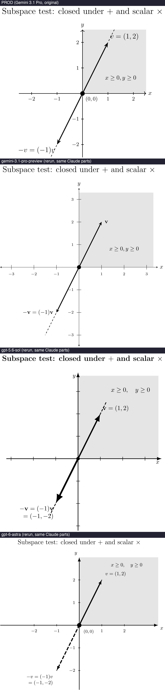
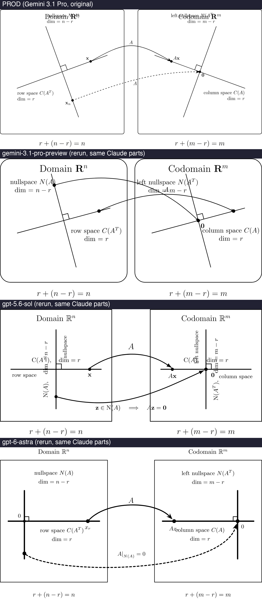
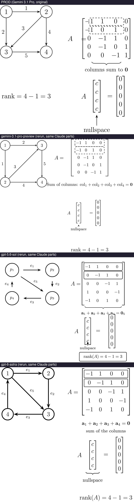
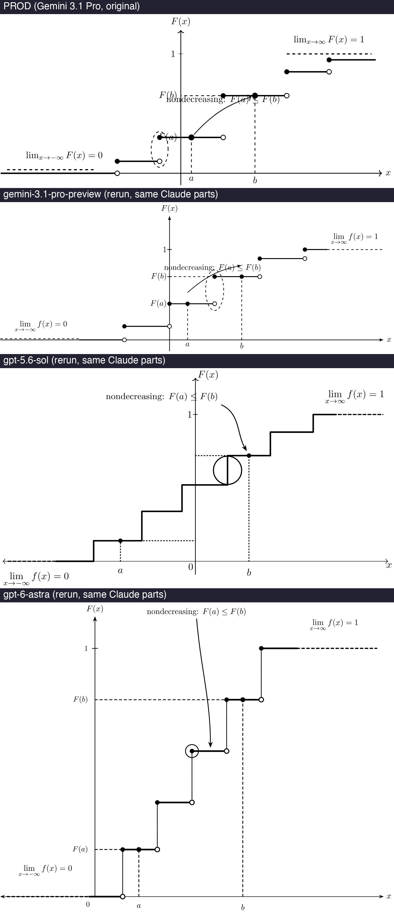
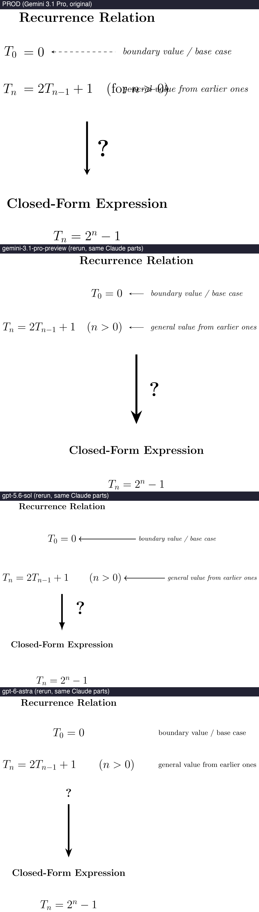
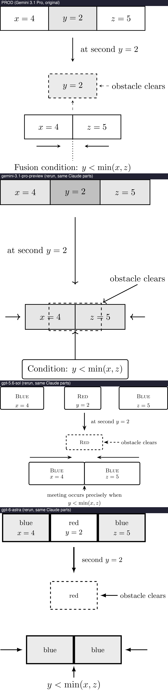
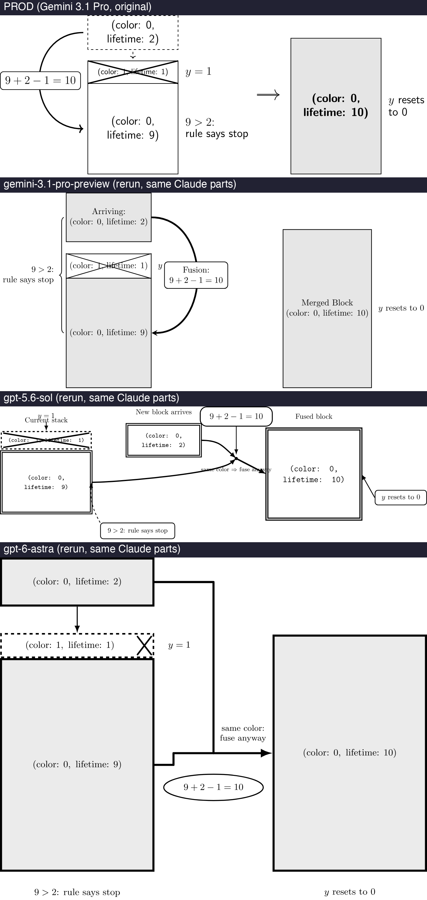
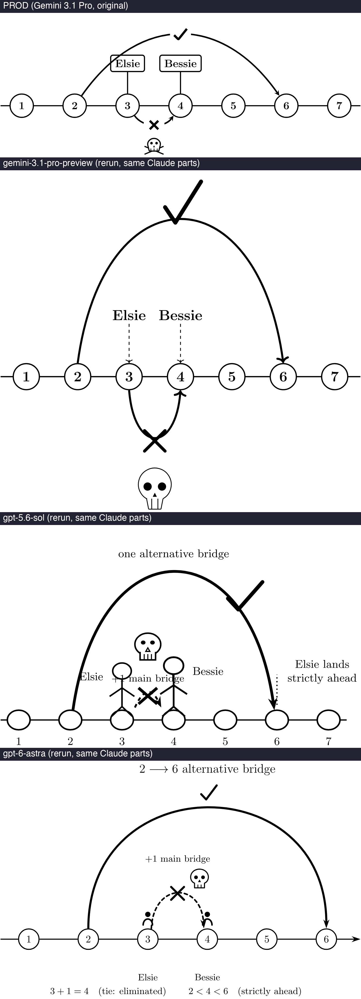
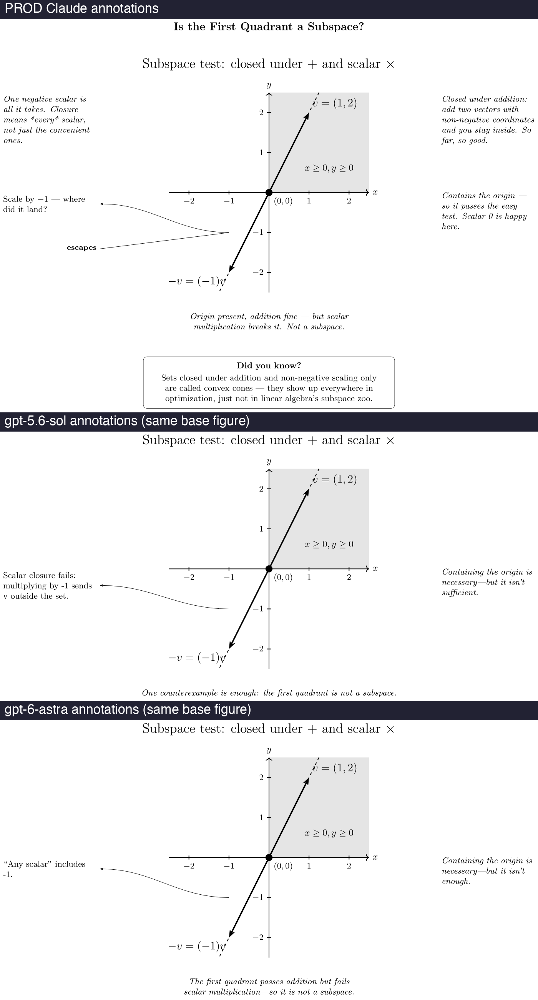
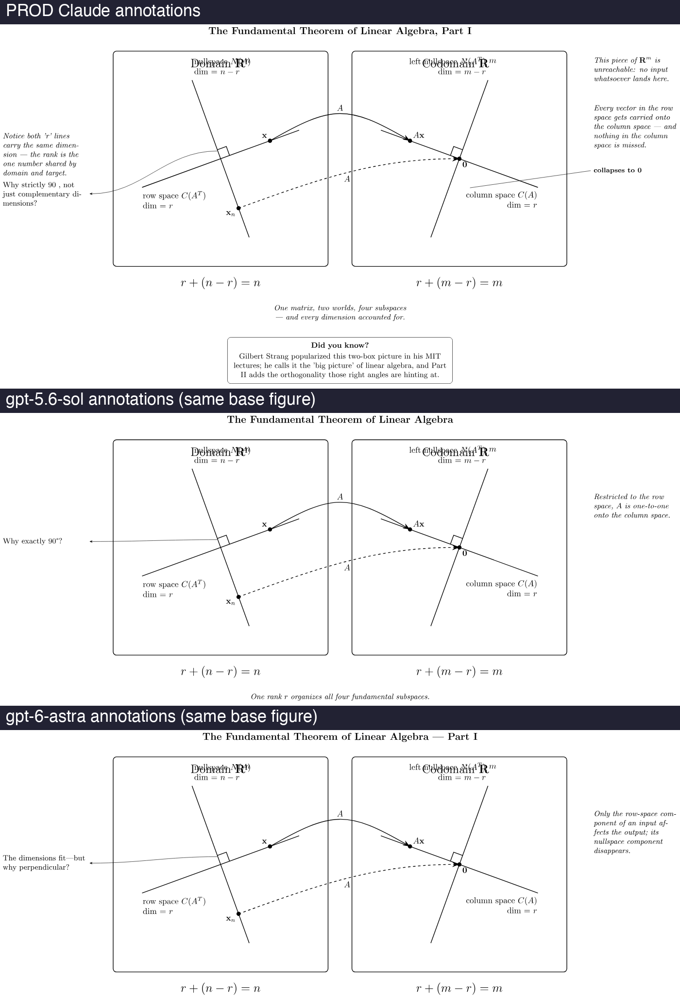
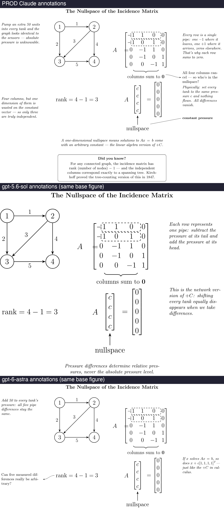
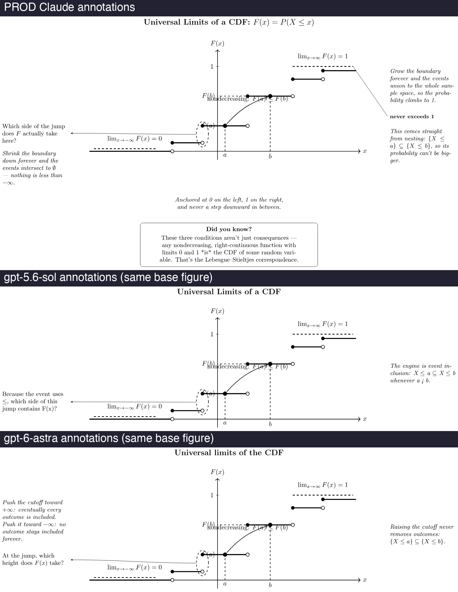
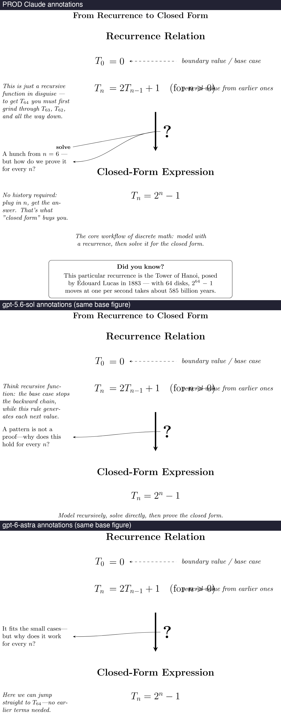
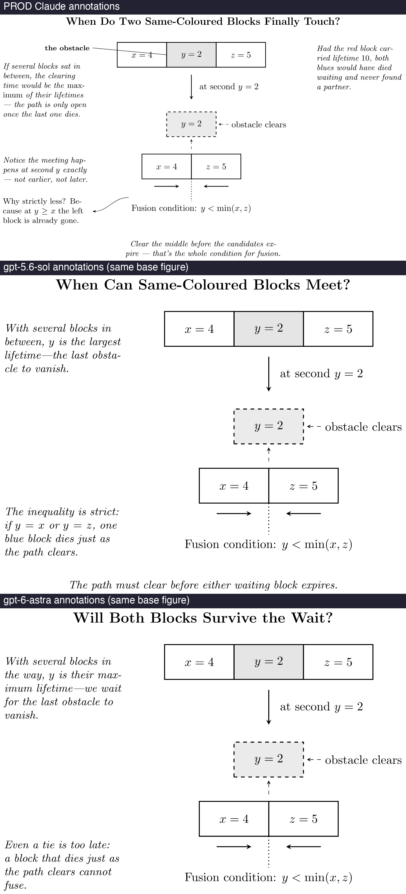
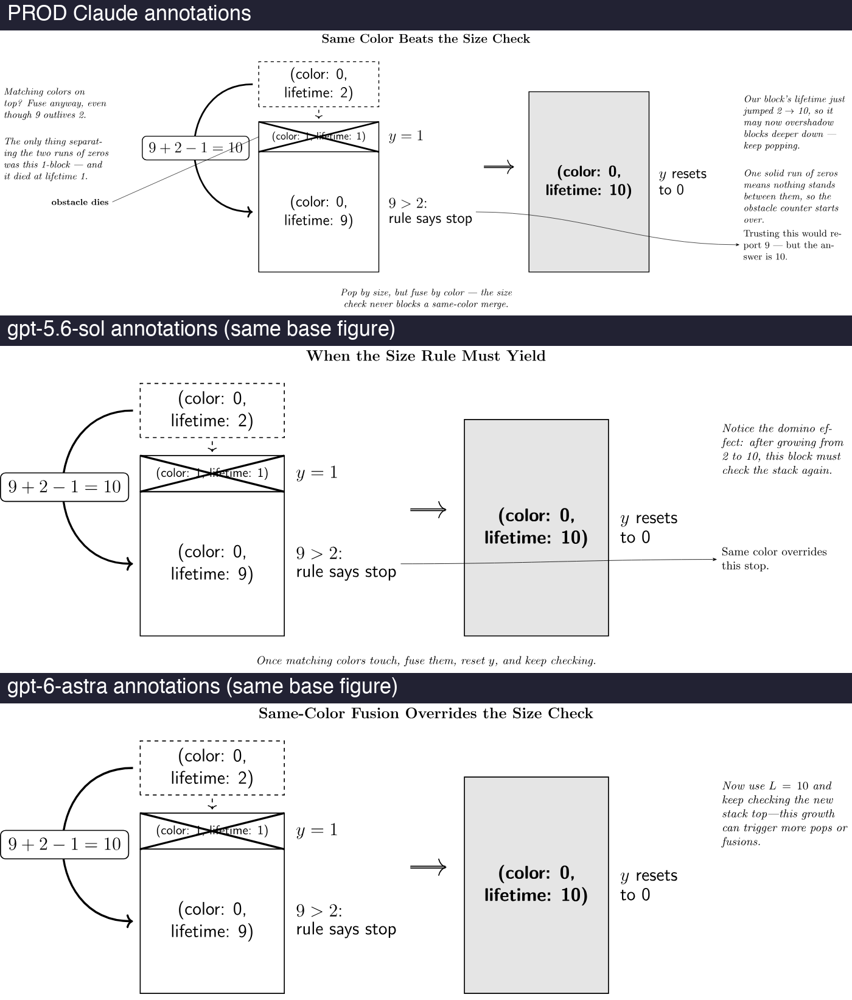
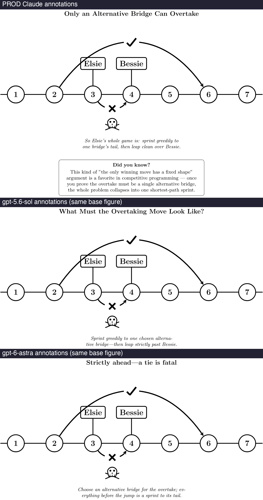
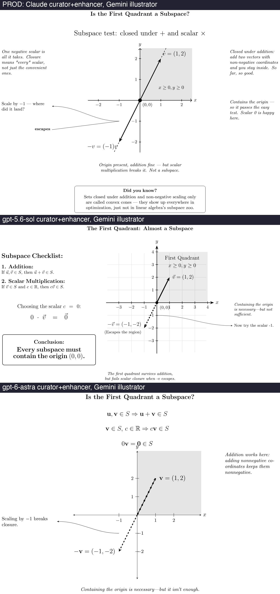
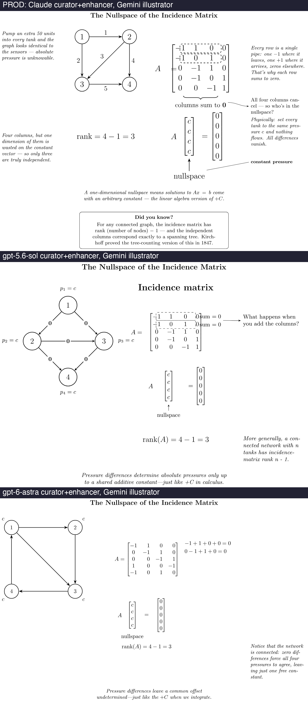
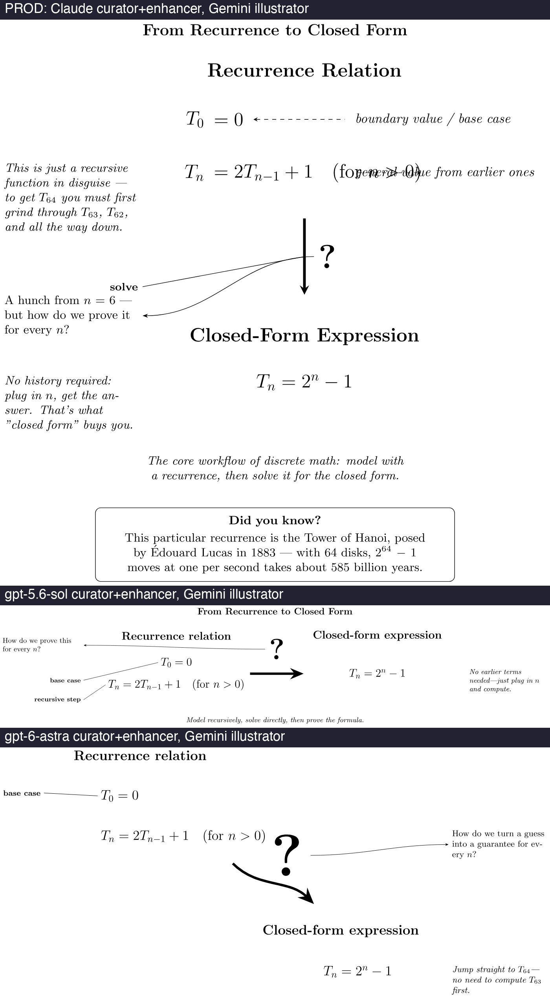
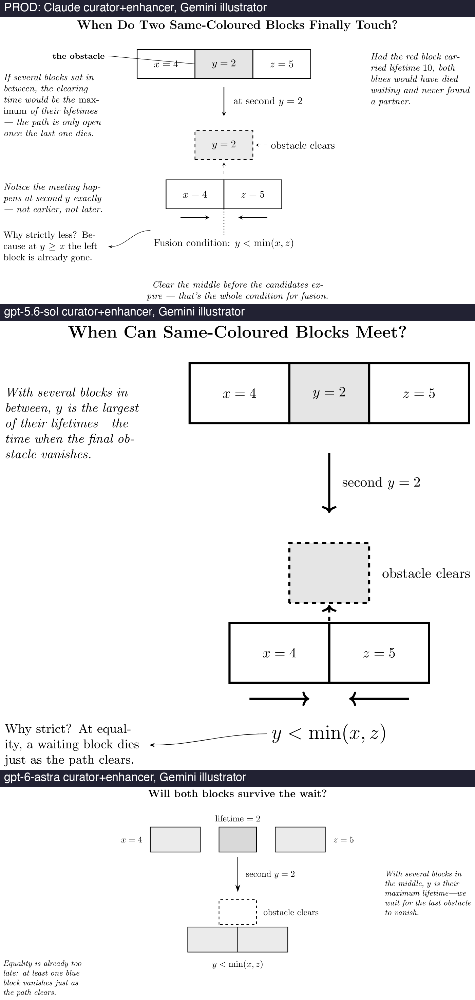
# Defining a Subspace
Look at what happened on the board. The $z=0$ plane is a perfectly self-contained little universe. You can add and scale all day long, and you never leave.
If we think in Rust terms, it's type-safe. The operations take inputs from the $z=0$ set and guarantee an output in the same $z=0$ set. The $z=1$ plane, on the other hand, immediately breaks the type signature.
This self-contained universe is exactly what mathematicians call a **subspace**. It's a subset of a vector space that is a valid vector space in its own right. To check if a subset is a subspace, we just need to verify two things are "closed":
1. If you add two vectors in the set, the sum stays in the set.
2. If you multiply a vector in the set by *any* scalar, the result stays in the set.
But there's a brilliantly simple shortcut hidden in rule number two. Think about it. If the set must be closed under *any* scalar... what happens if we choose the scalar 0?
Any vector multiplied by 0 gives the zero vector. That means **every subspace must contain the origin.** It's a hard, non-negotiable requirement. That hovering plane at $z=1$ never stood a chance! It doesn't contain $(0,0,0)$, so it fundamentally cannot be a subspace.
Now, let me throw a slightly trickier one at you. Let's drop down to 2D space, $\mathbf{R}^2$. What if we take just the first quadrant—all vectors where $x \ge 0$ and $y \ge 0$? It contains the origin. If you add two vectors in the first quadrant, the sum is still in the first quadrant. But is it a subspace?
---
**Blackboard:** clear the 3d planes. draw a standard 2d x-y coordinate system. shade the entire first quadrant (where x >= 0 and y >= 0) in light green. draw a vector v=(1, 2) in the first quadrant. draw a dashed line extending backwards from v, through the origin, and into the third quadrant. end it with an arrowhead at -v=(-1, -2), and paint this negative vector in red to highlight that it escapes the green zone.
# Subspaces
Look at the board. The $xy$-plane is a perfectly closed system. In a way, it's type-safe—you input two things from the set, apply an operation, and the output is guaranteed to still belong to the set.
The $z=1$ plane, on the other hand, throws the mathematical equivalent of a type error the second you try to add or scale.
Actually, there is a massive shortcut to see why the $z=1$ plane was doomed from the start. If a subset is truly closed under scalar multiplication, you must be able to multiply by *any* real number. What happens when you choose the scalar $0$? You get the zero vector, $(0,0,0)$. This gives us a golden rule: **every valid closed system must contain the origin.** The $z=1$ plane doesn't, so it's instantly disqualified.
This idea—a subset that is perfectly sealed off under linear combinations—is called a **subspace**.
A subspace is simply a vector space in its own right, living inside a larger host space. Because the host space already obeys all the weird algebraic rules (like $x+y=y+x$), all we ever have to check is closure: do addition and scalar multiplication keep us inside the room?
If we apply this to $\mathbf{R}^3$, the geometry is beautiful. The only possible subspaces are the whole 3D space itself, any flat plane that passes through the origin, any straight line through the origin, and the zero vector alone.
---
**Blackboard:** clear the previous vectors. draw a clean 3d coordinate system. draw three distinct geometric objects to illustrate valid subspaces: a green plane tilted slightly but passing exactly through the origin, an orange line intersecting the origin at a steep angle, and a bright white dot exactly at the origin (0,0,0). label them 'plane through origin', 'line through origin', and 'zero vector'.
# A Space Inside a Space
So the blue plane has inherited the full vector-space machinery from $\mathbf{R}^3$, while the red plane has not. That is the pattern hiding in plain sight: sometimes a subset of a vector space is itself a vector space under the *same* addition and scaling operations.
We call such a subset a **subspace**.
Formally, a nonempty subset $W$ of a vector space $V$ is a subspace when, for every $x,y\in W$ and every scalar $c$,
$$x+y\in W \qquad\text{and}\qquad cx\in W.$$
Equivalently—and this is often the cleanest test—every linear combination remains inside:
$$ax+by\in W$$
for all $x,y\in W$ and all scalars $a,b$.
Notice one immediate consequence. Set $c=0$. Then $0x=0$ must belong to $W$. So **every subspace contains the zero vector**. This instantly disqualifies the hovering plane $z=1$: it does not pass through the origin.
In $\mathbf{R}^3$, the familiar possibilities are beautifully rigid: the origin alone, any line through the origin, any plane through the origin, and all of $\mathbf{R}^3$. But containing the origin is only necessary, not sufficient. Some origin-containing sets still break under addition—and those are the sneaky ones worth testing next.
---
**Blackboard:** replace the previous drawing with a clean 3d coordinate system showing four nested examples of subspaces of r^3: label the origin {0}; draw and label a green line l through the origin; shade and label a translucent blue plane p through the origin containing that line; label the surrounding 3d space r^3. on the side, write the subspace test: x,y in w and a,b in r implies ax+by in w. beneath it, emphasize 0 in w.
# A Vector Space Inside a Vector Space
Pause for a moment. The blue plane isn't just a collection of vectors that happen to share a coordinate. **It supports the same operations as the surrounding space, without ever needing to leave the plane.** It's a vector space living inside another vector space.
We call that a **subspace**.
Precisely, a nonempty subset $S$ of a vector space $V$ is a subspace if:
- Whenever $u,v\in S$, we have $u+v\in S$.
- Whenever $v\in S$ and $c\in\mathbb{R}$, we have $cv\in S$.
These are the two **closure conditions**. We don't need to recheck associativity or distributivity: we're using the surrounding space's operations, so those identities are inherited.
Let's check the blue plane for *arbitrary* vectors, not just our examples. If $u=(a,b,0)$ and $v=(p,q,0)$, then
$$u+v=(a+p,b+q,0),\qquad cu=(ca,cb,0).$$
Both still have last coordinate zero. That proves closure.
Here's an immediate consequence: **every subspace contains the zero vector.** Why? Nonemptiness gives us some $v\in S$; closure under scaling gives $0v=0\in S$.
So the hovering plane was doomed before we even tried adding anything—it misses the origin!
But be careful: containing zero is necessary, not sufficient. Could a set contain the origin and still let our operations escape?
---
**Blackboard:** replace the board with two side-by-side 3d coordinate diagrams, each with axes labeled x, y, z and origin labeled o=(0,0,0). left panel: title 'closed under addition and scaling'. shade a blue rectangular patch representing the infinite plane z=0, labeled 's={(a,b,0): a,b real}'. draw arrows from o to v=(1,2,0), w=(3,-1,0), v+w=(4,1,0), and -v=(-1,-2,0); label each endpoint. add dashed parallelogram edges from v and w to v+w. highlight o with a solid blue dot and label '0 belongs to s'. right panel: title 'missing zero: not a subspace'. shade a red rectangular patch representing the infinite plane z=1, with the z-axis visibly piercing it at (0,0,1). draw an arrow from o to a=(1,2,1), labeling a. highlight o below the plane with a solid black dot and label '0a=0, outside the red plane'. beneath both diagrams write 'subspace = nonempty subset + closure under addition + closure under every real scalar'.
# The Fundamental Theorem of Linear Algebra
Let's step back and look at the whole board, Anirudh. We didn't just find four separate mathematical objects. We've uncovered the complete anatomy of a matrix.
Think about what an $m \times n$ matrix $A$ actually does. It takes a vector with $n$ components and transforms it into a vector with $m$ components. It's a bridge between two different worlds: the domain $\mathbf{R}^n$, and the target space $\mathbf{R}^m$.
Where do our four subspaces live?
In the domain $\mathbf{R}^n$, we have the row space $C(A^T)$ with dimension $r$, and the nullspace $N(A)$ with dimension $n - r$. Notice how beautifully those dimensions snap together? $r + (n - r) = n$. They perfectly partition the entire input space.
Over in the target space $\mathbf{R}^m$, we have the column space $C(A)$ with dimension $r$, and the left nullspace $N(A^T)$ with dimension $m - r$. Once again, $r + (m - r) = m$. They perfectly partition the output space.
This isn't just a neat piece of bookkeeping. It is the **Fundamental Theorem of Linear Algebra, Part I**. Every matrix, no matter how massive or chaotic it seems, cleaves its domain and its target space into these exact pairs of subspaces.
Look at how I've asked the assistant to draw them on the board. Inside each space, the two lines are drawn at a strict 90-degree angle to one another. We know their dimensions complement each other perfectly, but why would I draw them as strictly perpendicular? We'll get to that geometry soon. But first, let's test drive this beautifully symmetric machine on the absolute simplest matrices that exist.
---
**Blackboard:** draw a large bipartite diagram. on the left, draw a bounding box labeled 'domain r^n'. inside it, draw two intersecting lines strictly perpendicular to each other. label one 'row space c(a^t), dim = r' and the other 'nullspace n(a), dim = n - r'. on the right, draw a bounding box labeled 'codomain r^m'. inside it, draw two intersecting perpendicular lines. label one 'column space c(a), dim = r' and the other 'left nullspace n(a^t), dim = m - r'. draw an arrow labeled 'a' mapping a general point on the row space line to a point on the column space line, and another arrow mapping the entire nullspace line to the origin (0) of the codomain.
# The Big Picture
Let's step back. We've built four different subspaces. Separately, they might feel like a loose collection of algebraic trivia. But watch what happens when we arrange them together.
Think about what an $m \times n$ matrix $A$ actually *does*. It's a transformation. It takes an input vector $x$ from an $n$-dimensional space, and it spits out an output vector $b$ in an $m$-dimensional space.
Let's sort our four spaces into these two host universes.
In the input space, $\mathbf{R}^n$, we have the row space $C(A^T)$ and the nullspace $N(A)$. Look at their dimensions: $r$ and $n-r$. They add up perfectly to $n$.
In the output space, $\mathbf{R}^m$, we have the column space $C(A)$ and the left nullspace $N(A^T)$. Their dimensions? $r$ and $m-r$. They add up perfectly to $m$.
Do you see the symmetry here, Anirudh? For a software engineer, this is like cracking open a messy, chaotic legacy codebase and realizing that under the hood, it is strictly typed and perfectly memory-aligned.
Every single matrix in the universe cleanly tears its input space and output space into these complementary pieces. No lost dimensions. No overlapping waste. The rank $r$ acts as the bridge between the two worlds—it is the true, distilled transfer of information from $\mathbf{R}^n$ to $\mathbf{R}^m$.
We call this the **Fundamental Theorem of Linear Algebra, Part I**. It is the anatomy of a matrix.
---
**Blackboard:** draw a large diagram divided into two halves. on the left, label the domain 'r^n', containing two intersecting lines (or planes) representing the row space c(a^t) with dimension r, and the nullspace n(a) with dimension n-r. on the right, label the codomain 'r^m', containing the column space c(a) with dimension r, and the left nullspace n(a^t) with dimension m-r. draw a bold arrow labeled 'a' mapping from the domain to the codomain, specifically showing a connection between the row space and column space. add a title at the top: 'fundamental theorem of linear algebra, part i'.
# The Four Spaces, One Picture
Now step back and look at the whole machine.
For an $m\times n$ matrix $A$, two spaces live in the **input world** $\mathbf{R}^n$:
$$C(A^T),\qquad \dim C(A^T)=r,$$
$$N(A),\qquad \dim N(A)=n-r.$$
These aren’t merely two spaces whose dimensions happen to add to $n$. They are perpendicular. Every $x\in N(A)$ satisfies $Ax=0$, so its dot product with every row of $A$ is zero. Thus
$$N(A)=C(A^T)^\perp.$$
The other two spaces live in the **output world** $\mathbf{R}^m$:
$$C(A),\qquad \dim C(A)=r,$$
$$N(A^T),\qquad \dim N(A^T)=m-r.$$
They are perpendicular too. If $b=Ax$ lies in the column space and $y\in N(A^T)$, then
$$y^Tb=y^TAx=(A^Ty)^Tx=0.$$
Therefore $N(A^T)=C(A)^\perp$.
So $A$ takes the row-space part of an input and sends it into the column space; it completely destroys the nullspace part. Two orthogonal decompositions, joined by one linear map. That is the **four fundamental subspaces**—not four unrelated definitions, but one tightly written story. No sloppy subplot survives.
Now let’s turn the rank all the way down to $r=1$. What kind of matrix remains when the entire transformation has only one surviving direction?
---
**Blackboard:** draw a two-world diagram. on the left, label a large oval r^n (input space), split orthogonally into the row space c(a^t) of dimension r and the nullspace n(a) of dimension n-r; mark a right-angle symbol between them. on the right, label a large oval r^m (output space), split orthogonally into the column space c(a) of dimension r and the left nullspace n(a^t) of dimension m-r; mark a right-angle symbol. draw an arrow labeled a from c(a^t) to c(a), and an arrow from n(a) collapsing to the zero vector in r^m. write beneath: n(a)=c(a^t)^perp and n(a^t)=c(a)^perp.
# Four Spaces, Two Homes
Now let's put these four spaces into one picture. We met them separately, but they describe a single machine:
$$A:\mathbb{R}^n\longrightarrow\mathbb{R}^m.$$
Look at the two sides of the board. **On the input side**, we have the row space and nullspace, with dimensions $r$ and $n-r$. **On the output side**, we have the column space and left nullspace, with dimensions $r$ and $m-r$.
The natural geometric pairing isn't column space with nullspace—even though we first studied those together. They might not even live in the same ambient space!
And there's more than dimension bookkeeping here. Write the rows of $A$ as $a_1^T,\ldots,a_m^T$. Then
$$Ax=0\quad\Longleftrightarrow\quad a_i^Tx=0\text{ for every }i.$$
Each expression $a_i^Tx$ is a dot product. So a nullspace vector is perpendicular to every row—and therefore to every linear combination of rows. Conversely, being perpendicular to the entire row space makes every entry of $Ax$ zero.
**The nullspace is exactly the set of vectors perpendicular to the row space.** Applying the same reasoning to $A^T$, the left nullspace is exactly the set perpendicular to the column space.
Four algebraic definitions have become two perpendicular pairs. Beautiful: the equations were quietly describing geometry all along.
But what does multiplication by $A$ actually *do* to these paired spaces?
---
**Blackboard:** draw a schematic with two large outlined boxes side by side, explicitly labeled 'input space: r^n' and 'output space: r^m'. center an arrow labeled 'x maps to ax' from the input box to the output box. inside the input box, place two cards: 'row space c(a^t), dimension r' above 'nullspace n(a), dimension n-r'. between these cards put a perpendicular symbol and the text 'every vector in one is perpendicular to every vector in the other'. inside the output box use matching cards: 'column space c(a), dimension r' and 'left nullspace n(a^t), dimension m-r', with the same perpendicular symbol and explanation. color the row-space and column-space cards blue, and the two nullspace cards orange. below the input box write 'ax = 0 iff x is perpendicular to every row'. below the output box write 'a^t y = 0 iff y is perpendicular to every column'. these are organizational boxes, not coordinate plots; do not depict the subspaces as planes or imply that the overall mapping is invertible.
# The Nullspace of the Incidence Matrix Look closely at the columns of our matrix $A$ on the board. What happens if you add them straight across? In row 1, you have a $-1$, a $+1$, and two zeros. They sum to zero. Row 2? $-1$, $+1$, and two zeros. They sum to zero, too. In fact, because every single pipe starts at exactly one tank and ends at exactly one other tank, every row has exactly one $-1$ and one $+1$. The columns perfectly cancel each other out. In the language of linear algebra, a combination of the columns that yields the zero vector means that $x = [1, 1, 1, 1]^T$ is in the nullspace. $Ax = 0$. And if you can multiply by $1$, you can multiply by any constant $c$. The entire line of vectors $x = [c, c, c, c]^T$ lives in the nullspace. What does that mean physically for our tanks? Remember, $Ax$ computes the pressure *differences*. If $x = [c, c, c, c]^T$, the pressure in every tank is exactly $c$. If all tanks are at the exact same pressure, nothing flows. All differences are zero. And that answers our engineering problem: can you deduce the absolute pressures from the differences alone? No. If we pump an extra $50$ units of pressure into *every single tank*, the differences between them don't change a bit. The physics matches the math perfectly: because the matrix has a non-empty nullspace, $Ax = b$ does not have a unique solution. You can always add the nullspace—an arbitrary constant $c$—to your answer, just like the $+C$ when you integrate in calculus. This beautiful structure is called an **incidence matrix**. It translates a physical graph into a mathematical object. Our matrix has $4$ columns, but because its nullspace is $1$-dimensional, its rank is only $4 - 1 = 3$. But let's flip the question around. If our sensors hand us a vector of five pressure differences $b$, is there *always* a valid set of tank pressures that could have produced them? Or do the pipe differences have to follow some hidden rules? --- **Blackboard:** keep the graph of 4 tanks and 5 pipes. keep the 5x4 matrix a. below the matrix, write the nullspace equation: a [c, c, c, c]^t = [0, 0, 0, 0, 0]^t, and label the vector [c, c, c, c]^t as 'nullspace'.
# The Nullspace and Relative Pressure Look at the board. Scan across any row of that matrix. Every single row has exactly one $-1$ and one $+1$. The rest are zeros. So what happens if you simply add all four columns together? Every row's $-1$ cancels perfectly with its $+1$. The columns add up to a column of pure zeros. In the language of linear algebra, that means the vector $x = [1, 1, 1, 1]^T$ is in the nullspace of $A$. And because any multiple works, the entire line of vectors $x = [c, c, c, c]^T$ is in the nullspace. $Ax = 0$. But what does that mean *physically* for our water tanks? It means if we increase the pressure in *every* single tank by the exact same amount—say, adding some constant $c$ to all of them—the *difference* between any two tanks doesn't change one bit. The flow stays exactly the same. So, back to our engineering problem: can we figure out the exact absolute pressure just from the differential sensors? No. We can't. Because $A$ has a non-trivial nullspace, $Ax = b$ cannot have a unique solution. The true pressures are floating. The math is telling us exactly what the physics dictates: differences alone only give us *relative* pressure. To lock in absolute numbers, we'd have to physically ground one of the tanks—say, declare Tank 4 to be zero pressure. Now, let's flip it around and look at the column space. For which sensor readings $b$ is this system actually solvable? --- **Blackboard:** keep the previous 4-tank graph and the 5x4 matrix a. next to the matrix, write out the equation a * [c, c, c, c]^t = [0, 0, 0, 0, 0]^t to visually demonstrate the nullspace containing the constant vector.
# The Invisible Pressure Shift
Yes: the four columns add to the zero vector. Equivalently, if
$$\mathbf{1}=\begin{bmatrix}1\\1\\1\\1\end{bmatrix},$$
then
$$A\mathbf{1}=\mathbf{0}.$$
That has a wonderfully concrete meaning. Suppose $x$ is one set of tank pressures satisfying $Ax=b$. Now raise *every* tank pressure by the same amount $c$. The new pressure vector is
$$x+c\mathbf{1}.$$
Apply our matrix:
$$A(x+c\mathbf{1})=Ax+cA\mathbf{1}=b+c\mathbf{0}=b.$$
Every pipe sensor reports exactly the same difference. Of course it does: raising both ends of a pipe by, say, $10$ units cannot change the difference between them.
So our original goal—recovering the absolute pressures—cannot quite be achieved. The measurements determine the pressures only up to a common additive constant. This is not bad sensor data or numerical error; it is structural ambiguity built into the network.
But here is the sharper question: is that the *only* ambiguity? Could two pressure assignments produce identical pipe readings without differing by one common constant? The connectivity of the network is about to answer that for us.
---
**Blackboard:** keep the directed graph of four tanks and five pipes and the 5 by 4 matrix a. highlight the fact that each row contains one -1 and one +1. to the right, write the column vector 1 = [1,1,1,1]^t and the equation a1 = 0. below, write a(x + c1) = ax + ca1 = b, with x and x + c1 shown as two pressure assignments producing the same pipe-difference vector b.
# The sensors cannot see a common shift
Yes—the columns add to zero. But let’s see what that means for our broken sensors before we turn it into algebra.
Suppose the five readings are
$$b=(-3,-5,-2,-4,-2)^T.$$
We’re recording **end minus start**, so a negative reading means a pressure drop along the arrow.
The first two pipes tell us
$$x_2=x_1-3,\qquad x_3=x_1-5.$$
The fourth tells us
$$x_4=x_2-4=x_1-7.$$
Check the remaining pipes: $x_3-x_2=-2$ and $x_4-x_3=-2$. Both readings agree. Good—we haven’t ignored any sensor.
But what determines $x_1$? Nothing!
Choose $x_1=10$, and we get $(10,7,5,3)^T$. Choose $x_1=20$, and we get $(20,17,15,13)^T$. Look at the board: every pressure increased by ten, yet **every sensor reading stayed unchanged**.
That’s exactly what the column cancellation expresses. With $\mathbf{1}=(1,1,1,1)^T$,
$$A\mathbf{1}=0,$$
and therefore
$$A(x+c\mathbf{1})=Ax+cA\mathbf{1}=Ax.$$
Our reconstruction didn’t fail because we chose a poor algorithm. The measurements themselves cannot distinguish these possibilities. We need one absolute pressure measurement to fix the common offset.
Now here’s the sharper question: is that common shift the *only* ambiguity, or could some less obvious pressure change also hide from every sensor?
---
**Blackboard:** draw four tank icons at the corners of a square: tank 1 top-left, tank 2 top-right, tank 3 bottom-left, tank 4 bottom-right. draw directed pipes with arrows and labels: pipe 1 from 1 to 2, b1=-3; pipe 2 from 1 to 3, b2=-5; pipe 3 from 2 to 3, b3=-2; pipe 4 from 2 to 4, b4=-4; pipe 5 from 3 to 4, b5=-2. at each tank show two pressure values: tank 1 '10 → 20', tank 2 '7 → 17', tank 3 '5 → 15', tank 4 '3 → 13'. use blue for the initial values and orange for the shifted values. add a legend: 'orange pressures = blue pressures + 10; all pipe readings unchanged'. to the right draw the matrix a with rows [-1,1,0,0], [-1,0,1,0], [0,-1,1,0], [0,-1,0,1], [0,0,-1,1], labeling columns tank 1 through tank 4 and rows pipe 1 through pipe 5. beneath the matrix write a(1,1,1,1)^t=0 and 'a common shift is invisible'. along the bottom write 'sensor convention: b = pressure at arrowhead − pressure at tail'.
# Universal limits of the CDF
Look back at the board, Anirudh. We have our definition: $F(x) = P(X \le x)$. Let's pull this apart and rigorously derive the universal rules that govern every CDF.
First, let's pick two values, $a$ and $b$, where $a < b$. The event $\{X \le a\}$ is completely contained within the event $\{X \le b\}$. Think about it: if a query finishes in 50ms, it inherently finished in 80ms. Because the first event is a subset of the second, its probability cannot be larger.
So, $P(X \le a) \le P(X \le b)$, which means $F(a) \le F(b)$. The CDF is always **nondecreasing**. It can stay flat, but it can never, ever go down.
Now, let's push the boundaries. What happens as $x$ approaches infinity? Let's take a sequence of boundaries $b_n$ that increase toward infinity. The events $\{X \le b_n\}$ get larger and larger, and their union covers the entire sample space, $\{X < \infty\}$.
By the continuity of probabilities, we can evaluate the limit of the sequence:
$\lim_{n \to \infty} P(X \le b_n) = P(X < \infty) = 1$.
So, $\lim_{x \to \infty} F(x) = 1$.
Conversely, if we take a sequence $b_n$ decreasing to negative infinity, the intersection of those events is the empty set—it's impossible for a real-valued variable to be less than negative infinity.
So, $\lim_{n \to \infty} P(X \le b_n) = P(\emptyset) = 0$. Meaning $\lim_{x \to -\infty} F(x) = 0$.
Every valid CDF is anchored at 0 on the left, reaches 1 on the right, and only ever climbs. But there's one more subtle property hidden in those exact moments where the function jumps. Do you see it?
---
**Blackboard:** keep the existing step function and annotations. extend the x-axis significantly to the left and right. draw a horizontal dashed line along y = 0 on the far left, labeled 'lim x->-∞ f(x) = 0'. draw a horizontal dashed line at y = 1 on the far right, labeled 'lim x->∞ f(x) = 1'.
# Properties of the cumulative distribution function
Notice what this simple equation—$P(a < X \le b) = F(b) - F(a)$—forces upon the shape of $F(x)$.
Because probabilities can never be negative, $P(a < X \le b) \ge 0$. Therefore, $F(b) - F(a) \ge 0$, which directly implies $F(b) \ge F(a)$ for any $a < b$.
We just proved the first fundamental property of *any* CDF: it is a **nondecreasing function**. You can't lose accumulated probability as you sweep forward along the number line. It can plateau, or it can jump up, but it never goes down.
Now, let's push the boundaries. What happens if we take the limit as $x$ approaches positive infinity?
We are asking for the probability that our random variable is less than infinity. Since $X$ must evaluate to some finite real number, this event is a certainty. By the continuity property of probabilities, $\lim_{x \to \infty} F(x) = 1$.
And if we run toward negative infinity? We're asking for the probability that $X \le -\infty$. That's an impossible event. So, $\lim_{x \to -\infty} F(x) = 0$.
Look at the board. We've completely bounded our function. Every valid CDF starts at zero on the far left, marches upward, and gets capped at exactly one on the far right. These aren't arbitrary rules—they are the strict logical consequences of defining $F(x) = P(X \le x)$.
---
**Blackboard:** draw a generic cumulative distribution function graph. on the x-axis, show the curve starting flat along y=0 as x goes to negative infinity, then non-decreasingly stepping and curving upwards, and finally flattening out asymptotically at y=1 as x goes to positive infinity. label the lower limit as lim_{x \to -\infty} f(x) = 0 and the upper limit as lim_{x \to \infty} f(x) = 1.
# Why a CDF Can Only Rise
That prefix-sum viewpoint already hints at our first structural property: a CDF can never go downward. Let’s prove it cleanly.
Take any two real numbers $a<b$. If an outcome satisfies $X\le a$, then it automatically satisfies $X\le b$. In event language,
$$\{X\le a\}\subseteq\{X\le b\}.$$
Probability respects containment: if $A\subseteq B$, then $P(A)\le P(B)$. Therefore,
$$F(a)=P(X\le a)\le P(X\le b)=F(b).$$
So $F$ is **nondecreasing**. It may climb smoothly, jump abruptly, or remain flat—but it cannot fall. Once probability has accumulated, it never leaks back out. A wonderfully boring data structure.
We also immediately know that
$$0\le F(x)\le 1,$$
because every $F(x)$ is the probability of an event.
Now push the threshold farther and farther right. The events $\{X\le b\}$ eventually capture every possible finite value of $X$, so their probabilities approach $1$:
$$\lim_{b\to\infty}F(b)=1.$$
Push the threshold toward negative infinity, and the captured event shrinks toward the empty set:
$$\lim_{b\to-\infty}F(b)=0.$$
Those endpoint limits feel visually obvious—but underneath them sits a precise theorem about nested events. Let’s expose that machinery next.
---
**Blackboard:** replace the current board with a two-panel figure. left panel: draw a real number line with a < b marked, shade the ray (-infinity, a] in dark blue and the additional interval (a, b] in light blue; label the nesting {x <= a} subset {x <= b}. right panel: draw a generic nondecreasing cdf from x = -6 to 6, including one smooth rising section, one flat section, and two upward jumps; label the vertical axis f(x) from 0 to 1, add dashed horizontal asymptotes at 0 and 1, and annotate 'never decreases', 'f(x) -> 0' on the far left, and 'f(x) -> 1' on the far right.
# Why a CDF Cannot Fall
Our interval calculation tells us something about the *entire shape* of a CDF. Let’s derive its rules directly from
$$F(x)=P(X\le x).$$
We won’t assume $X$ is discrete: these arguments work for **every real-valued random variable**.
First, because $F(x)$ is a probability,
$$0\le F(x)\le 1.$$
Now take any two thresholds $a<b$. Look at the nested regions on the board. If an outcome satisfies $X\le a$, it certainly satisfies $X\le b$. Raising the threshold cannot eject an outcome that already qualified.
More precisely, we have the disjoint decomposition
$$\{X\le b\}=\{X\le a\}\cup\{a<X\le b\}.$$
Additivity of probability gives
$$F(b)=F(a)+P(a<X\le b).$$
The added probability is nonnegative, so
$$\boxed{F(a)\le F(b).}$$
That’s **nondecreasing**, not necessarily strictly increasing: if the interval contains no probability, the CDF stays flat.
Notice the proof strategy: **translate a statement about function values into a relationship between events**. The graph behaves this way because those events are nested.
Now, our bounded latency example eventually reaches $1$. But that needs a qualification: an unbounded random variable might have some probability beyond *every* finite threshold. Its CDF need never actually reach $1$.
So what guarantees that it at least *approaches* $1$? We need to understand what happens when events keep growing.
---
**Blackboard:** replace the existing graph with a nested-event diagram. draw a large rectangle labeled ω: all outcomes. inside it draw a large oval labeled b = {ω : x(ω) ≤ b}. entirely inside b draw a smaller oval labeled a = {ω : x(ω) ≤ a}. put the condition a < b above the diagram. color a light blue. color the portion of b outside a light orange and label it b \ a = {ω : a < x(ω) ≤ b}, using a leader line if necessary. leave the part of ω outside b uncolored. below the diagram write f(b) = f(a) + p(a < x ≤ b), color the final probability term orange, and annotate it '≥ 0'. under that display the boxed conclusion f(a) ≤ f(b). add a small separate note at the bottom: 'cdf bounds: 0 ≤ f(x) ≤ 1'.
# Establishing recurrence relations
Let's put some formal names to the tools we are using.
That step-by-step equation we built—where we defined $T_n = 2T_{n-1} + 1$, along with the starting point $T_0 = 0$—mathematicians call this a **recurrence** or a **recurrence relation**.
As someone who writes Rust, you know this intimately as a recursive function. It requires two things to be mathematically complete: a boundary value (your base case, so the logic doesn't loop forever backwards), and an equation for the general value in terms of earlier ones.
But as we just noticed, computing a recurrence for a large $n$ is painfully inefficient. To find the 64th term, you have to compute the 63rd, which requires the 62nd, and so on. That's why we want what we just guessed: $T_n = 2^n - 1$. This is what we call a **closed-form expression**. A closed form lets you compute the answer directly, independent of any previous terms.
In discrete math, this is the core workflow: you model a complex system by setting up a recurrence relation, and then you try to solve that recurrence to find the neat, efficient closed form.
We have our recurrence, and we have our suspected closed form. But a strong hunch based on $n=6$ is not a mathematical truth. How do we rigorously prove that our closed form satisfies the recurrence for every $n$ up to infinity?
---
**Blackboard:** clear the board. write the heading 'recurrence relation' and below it the equations: t_0 = 0 and t_n = 2t_{n-1} + 1 (for n > 0). below that, write the heading 'closed-form expression' and the equation t_n = 2^n - 1. draw a bold arrow pointing from the recurrence to the closed form, with a large question mark floating above the arrow.
# Defining recurrence relations and closed forms
Before we bridge that gap, let's put a proper name to the step-by-step machine we built.
In computer science, when a function calls itself, you call it recursion. In mathematics, a set of equations like $T_n = 2T_{n-1} + 1$, paired with a starting point like $T_0 = 0$, is called a **recurrence relation**, or just a **recurrence**.
It has two structural parts. The boundary value—or base case—gives us a firm place to stand. The general equation tells us how to take a step. Together, they uniquely define the entire sequence. Nothing deep here, it is just the formal terminology for the logic you already know how to write in code.
But as we just noticed, a recurrence only gives us *local* information. It tells us how to get to the next step, not how to jump to the end. Our goal in discrete math is almost always to start with a recurrence—because it perfectly captures the local, physical rules of the problem—and then solve it to find a **closed form**. That's our $T_n = 2^n - 1$. No loops, no previous states, just a direct $O(1)$ map from $n$ to the answer.
So, we have our recurrence, and we have our closed-form guess. How do we prove they are perfectly mathematically equivalent?
---
**Blackboard:** clear the previous sequence. on the left side, write 'recurrence relation' with the equations t_0 = 0 and t_n = 2t_{n-1} + 1 below it, labeling them 'boundary value' and 'general equation'. on the right side, write 'closed form' with t_n = 2^n - 1 below it. draw an arrow with a large question mark connecting the recurrence on the left to the closed form on the right.
# The Recurrence Relation
Before we connect them, let’s name precisely what we built:
$$T_0=0, \qquad T_n=2T_{n-1}+1 \quad (n>0).$$
This pair of statements is called a **recurrence relation**. It has two essential parts. The **boundary value** tells us where computation begins: $T_0=0$. The **recursive rule** tells us how to obtain each new value from an earlier one.
Both parts matter. The rule alone does not determine a unique sequence. If I secretly chose $T_0=5$, the same rule would generate $5,11,23,47,\ldots$ instead. The boundary value is the seed; the recurrence is the growth mechanism. Very much like a recursive function that needs a base case—omit it, and your program doesn’t become profound; it just fails to terminate.
Our guessed formula,
$$T_n=2^n-1,$$
is different: it is a **closed form**, because it gives $T_n$ directly without requiring earlier terms.
So now we have a precise challenge. We must prove that the sequence generated by the recurrence is exactly the sequence described by the closed form—for *every* $n$, not merely the six cases we inspected. The recurrence itself suggests how: verify the first rung, then show that truth at one rung forces truth at the next.
---
**Blackboard:** replace the board with two side-by-side panels. in the left panel, title it 'recurrence' and write t_0 = 0 and t_n = 2t_{n-1} + 1 for n > 0. label t_0 = 0 with an arrow saying 'boundary value / base case' and label the second equation with an arrow saying 'recursive rule'. beneath it draw boxes 0, 1, 3, 7, 15 connected by arrows, with each arrow labeled 'double, then +1'. in the right panel, title it 'closed form' and write t_n = 2^n - 1 in a large box, with an arrow directly from n to t_n labeled 'no earlier terms needed'. along the bottom draw a ladder with rungs labeled 0, 1, 2, 3, and an upward arrow from each rung to the next, foreshadowing induction.
# A Rule and a Starting Point
First, a correction to my apocalyptic enthusiasm: 585 billion years is an enormous timescale, but that calculation doesn't prove the world will have ended!
Now, let's give our two mathematical objects their proper roles. On the left is what we **proved from the puzzle's rules**:
$$T_0 = 0, \qquad T_n = 2T_{n-1}+1 \quad (n\geq 1).$$
This is a **recurrence relation**: an equation expressing a sequence's terms using earlier terms, together with enough starting information to determine the sequence. Here, each term depends only on its immediate predecessor.
The starting value matters. “Double the previous number and add one” isn't a complete specification. Start at $0$, and you get $0,1,3,7,\ldots$. Start at $1$, and you get $1,3,7,15,\ldots$. Same update rule; different values at each index. Think of a loop body without its initialization.
Together, our starting value and update rule determine **exactly one sequence**: $T_0$ fixes $T_1$, which fixes $T_2$, and so on.
On the right is our candidate **closed form**:
$$T_n = 2^n-1.$$
It gives the value directly in terms of $n$, without referring to previous terms. But it remains a conjecture.
So here's our next move: check that this candidate starts correctly, then prove that whenever it matches one term, the recurrence forces it to match the next. Could those two checks settle infinitely many cases?
---
**Blackboard:** clear the board. draw two separated panels. title the left panel 'established recurrence' and write t_0 = 0 and t_n = 2t_{n-1} + 1 for n >= 1. underneath, draw the chain t_0 = 0 → t_1 = 1 → t_2 = 3 → t_3 = 7, labeling each arrow '×2 + 1'. below that, write 'starting value + update rule determine the sequence'. title the right panel 'candidate closed form' and write t_n = 2^n - 1 for n >= 0, with 'conjecture: agrees with tested cases' underneath. between the panels draw a connecting line labeled 'proof needed'. along the bottom write two questions: 'same starting value?' and 'does agreement pass to the next term?' do not present the candidate formula as proved.
# What has to happen before two same-coloured blocks touch? Since our entire goal is to track lifetimes, and lifetimes only ever grow through fusion, we have to interrogate fusion directly. When exactly *do* two blocks of the same color finally meet? Look at the board. We have a blue block on the left with lifetime $x=4$, and a blue block on the right with lifetime $z=5$. Right now, they can't fuse because that red block is in the way. For the two blue blocks to touch, every single block strictly between them has to completely vanish. When does that happen? Exactly at second $y$, where $y$ is the maximum lifetime among all those in-between blocks. In our case, the obstacle clears at $y=2$. But here is the catch: do they *always* get to meet? What if that red block had a lifetime of 10? By the time second 10 rolls around, both blue blocks would have been dead for seconds. They would die waiting. For a meeting to actually happen, the time it takes to clear the middle ($y$) must be strictly less than the lifespans of the two blocks waiting to fuse. If $y$ is larger than or equal to either $x$ or $z$, one of the candidates dies before the path clears, and they never get a partner. So the ironclad condition for a fusion is that the 'obstacle' lifetime $y$ is below both $x$ and $z$. But if they do survive to meet at second $y$, what happens next? --- **Blackboard:** keep the three abstract blocks (blue l=4, red l=2, blue l=5). draw an arrow pointing down to a new state at 'second y=2': the red block is drawn with a dashed outline vanishing (labeled 'obstacle clears'), and the two blue blocks are shown sliding together to touch. annotate this meeting with the condition 'y < min(x, z)'.
# What has to happen before two same-coloured blocks touch? Since our entire problem now boils down to tracking lifetimes, and lifetimes only ever grow through fusions, we have to interrogate fusion directly. When do two blocks actually get the chance to meet? Let's isolate it. Imagine two blocks of the same color—say, blue. Let's say the left one currently has a lifetime of $x$, and the right one has a lifetime of $z$. But they aren't adjacent. There is a whole sequence of differently colored blocks sitting between them. For those two blue blocks to touch, every single obstacle strictly between them has to completely vanish. When exactly does that happen? It happens the very second the *most resilient* block in that middle stretch dies. Let's call the maximum lifetime among all those in-between blocks $y$. So the walls come down exactly at second $y$. But here is the catch: do our two blue blocks even get to meet? They only fuse if they are both still alive when that barrier drops. If $y \ge x$, the left block bleeds out before the middle is cleared. It never gets a partner. The same goes if $y \ge z$. The only way a fusion happens is if the middle clears out while both outer blocks still have life left in them. The condition for them to meet is $y \le \min(x, z)$. If that holds, they survive to touch. The obvious next question is: what shape are they in when they finally do? --- **Blackboard:** draw three abstract blocks. the left block is blue with label 'l = x'. the right block is blue with label 'l = z'. between them, draw a jagged grey block representing an arbitrary sequence of intermediate blocks, labeled 'max lifetime = y'. add the text 'fusion condition: y ≤ min(x, z)' below the diagram.
# What must vanish before a fusion?
Now we should interrogate the only event capable of extending a lifetime: fusion. Suppose two blue blocks sit apart, with lifetimes $x$ and $z$. What prevents them from fusing immediately? Not their distance in elements, but the blocks trapped between them.
For the blue blocks to become adjacent, **every** intervening block must already be gone. If those intervening lifetimes are $l_1,l_2,\dots,l_k$, when is that finally true? The shorter ones disappear earlier, but we are still blocked by the longest-lived one. So the first possible meeting time is
$$y=\max(l_1,l_2,\dots,l_k).$$
That maximum is the only fact we need from the entire middle region.
But “first possible” does not mean the meeting necessarily happens. Both blue blocks must still exist after the middle vanishes. Thus we need
$$y<x \quad\text{and}\quad y<z.$$
If, say, $x\le y$, the left blue block dies no later than the obstruction does. It never survives long enough to reach its same-coloured partner, so no future fusion can rescue it.
This gives us the exact gate for fusion: the middle must disappear before either endpoint. Next we can ask the quantitative question: assuming that gate is passed, how much of each endpoint remains when they finally touch?
---
**Blackboard:** replace the board with a horizontal sequence of five abstract blocks: a blue left endpoint labeled 'lifetime x', three differently colored middle blocks labeled 'l1', 'l2', and 'l3', and a blue right endpoint labeled 'lifetime z'. draw a bracket under the three middle blocks labeled 'must all disappear first'. beneath it write 'y = max(l1, l2, l3)'. add arrows from the two blue blocks toward the cleared middle, and write the fusion condition prominently: 'y < x and y < z'. in a small crossed-out side sketch, show the left blue block vanished when 'x ≤ y', with the caption 'no partner survives to fuse'.
# When can two blocks meet?
Now we have a very specific question to chase: lifetimes only grow through fusion, so **what has to happen for a fusion to become possible?**
Take the two blue blocks on the board. Call their lifetimes $x$ and $z$, measured before this proposed fusion. They have the right colour to merge—but colour alone isn't enough. Every block strictly between them must disappear first.
So we need to know when that entire middle interval becomes empty. Do we add its lifetimes? No: those blocks are shrinking **simultaneously**, not taking turns. We are waiting for the *last* obstruction to disappear. If their lifetimes are $l_1,\ldots,l_k$, that moment is
$$y=\max(l_1,\ldots,l_k).$$
But clearing the path isn't enough either. Both blue blocks must still exist when the path clears. That gives us the meeting condition:
$$y<x\quad\text{and}\quad y<z.$$
The strictness matters. If $x=y$, the left blue block disappears in the very same deletion round as the last obstruction. There is no surviving left partner to fuse with afterward.
So we've reduced the geometry to one comparison: **does the middle disappear before either endpoint does?** Once it does, we can ask how much of each endpoint is left.
---
**Blackboard:** clear the previous board, including its array-strength annotation. draw a horizontal row of five separated rectangular blocks: blue labelled 'left: lifetime x', red labelled 'l₁', green labelled 'l₂', orange labelled 'l₃', and blue labelled 'right: lifetime z'. state above the row: 'lifetimes before the proposed fusion'. place a bracket under just the three middle blocks labelled 'middle clears at y = max(l₁, l₂, l₃)'. below this, draw a downward arrow labelled 'after deletion round y, if y < x and y < z'. at the arrow's destination draw two touching blue rectangles, retaining a dashed seam between them, labelled 'left survives' and 'right survives'. under them write 'same colour + no obstruction → fusion'. at the bottom, in a separate warning box, write 'if y = x or y = z, that endpoint is already empty: no two-survivor fusion.' do not show a fused lifetime or any fusion arithmetic.
# Is discarding the shadowed blocks the whole rule? Let's stress-test this beautiful rule on the third sample. Suppose we've processed a few pairs and our stack currently has a block of 9 zeros, then 1 one. So, `(color: 0, lifetime: 9)` on the bottom, `(color: 1, lifetime: 1)` on top. Now, a new block of 2 zeros arrives. $L = 2$. If we strictly follow our rule—'only pop what is smaller or equal to $L$'—what happens? The new 2-block pops the `(1, 1)`, setting our obstacle $y = 1$. The next block down is `(0, 9)`. Since $9 > 2$, our rule tells us to stop. We'd push the 2-block, check the bottom of the stack, and report a maximum lifetime of 9. Check the problem statement. The true answer is 10. We missed a fusion. Why? Look at the colors. The 9-block and the 2-block are both zeros. The obstacle between them died at $y=1$. The path is clear! It doesn't matter that 9 outlives 2; they still touch. Let's run the formula we just built: $x=9, z=2, y=1$. They fuse into $9 + 2 - 1 = 10$. This is the final piece of the puzzle. If the top of the stack shares our new block's color, we *must* fuse with it, even if it outlives us. And notice the domino effect: our new block's lifetime just spiked from 2 to 10. Because it grew, it might now overshadow even deeper blocks, so we must keep checking the new top of the stack. Finally, since these blocks just fused into one solid run of zeros, there are no obstacles between them anymore—so our obstacle counter $y$ resets to 0. --- **Blackboard:** draw a stack with two blocks: a large blue block at the bottom labeled '(color: 0, lifetime: 9)' and a thin red block on top labeled '(color: 1, lifetime: 1)'. show a new blue block arriving: '(color: 0, lifetime: 2)'. cross out the red block, label it 'y = 1'. draw a bright arrow merging the top and bottom blue blocks, overriding the size check, with a formula bubble: '9 + 2 - 1 = 10'. write 'y resets to 0' next to the newly merged giant block.
# Is discarding the shadowed blocks the whole rule? Let's make sure our 'pop the smaller blocks' rule is bulletproof. We'll stress-test it on the final prefix of the third sample. Imagine we've processed up to a block of 9 zeros, followed by 1 one. Our stack has `(zero, 9)` at the bottom and `(one, 1)` on top. Now, a new block arrives: 2 zeros. So $L = 2$. Let's follow our exact rule. The top of the stack is 1, which is $\le 2$. We pop it, setting our obstacle $y = 1$. The next top is `(zero, 9)`. Since 9 is *not* $\le 2$, our rule says we stop popping. We push the `(zero, 2)` and read the bottom of the stack: 9. But check the problem description. The actual answer for this prefix is 10. We failed. Why? Because we forgot our own formula! We have a left block of zeros $x=9$, a right block $z=2$, and the obstacle we just cleared was $y=1$. The condition for fusion is $y \le \min(x, z)$. Is $1 \le \min(9, 2)$? Yes! They *do* fuse, and their combined lifetime is $9 + 2 - 1 = 10$. Our pop rule stopped too early because it only looked at size. If the new block shares a color with the top of the stack, they merge—even if the top block outlives the new one. And when they merge, the obstacle $y$ resets to 0, because they are now one contiguous block. Furthermore, because their combined lifetime just grew to 10, this newly fused block might now dominate even larger blocks further down, meaning we must continue evaluating the stack. --- **Blackboard:** draw a stack with a large block (zero, 9) at the bottom and a small block (one, 1) above it. show a new block (zero, 2) arriving. cross out the (one, 1) block and label it 'y = 1'. draw a bright fusion animation combining the (zero, 9) and the new (zero, 2) into a massive block labeled '(zero, 10)'.
# The Same-Colour Exception Before we trust “pop only what the newcomer outlives,” let’s attack it with the third sample. Its final suffix is especially revealing: a zero-block with lifetime $9$, then a one-block with lifetime $1$, then a new zero-block with lifetime $L=2$. Our shadowing rule pops the lifetime-$1$ block because $1 \le 2$. Now the stack exposes the old zero-block of lifetime $9$. Since $9>2$, the naive rule stops and reports $9$. But that cannot be right. The separator dies at time $y=1$, while both zero-blocks are still alive. They therefore meet and fuse. Our formula gives $$9+2-1=10.$$ So here is the missing correction: **same colour overrides the usual pop threshold**. If the exposed stack top has the same colour as our current block, we must pop and fuse it even when its lifetime is larger than the current lifetime. After that fusion, the current lifetime has grown from $2$ to $10$, so we cannot stop—we must continue climbing down the stack, because this stronger fused block may now shadow or fuse with still earlier blocks. And we reset the separator value $y$ to $0$: the old intervening blocks have already been accounted for in the fusion, and the result is now one contiguous block. That failed stress test has exposed the complete shape of the update rule. --- **Blackboard:** draw the relevant suffix of the third sample as three horizontal blocks from left to right: a tall blue block labeled "0, lifetime 9", a tiny red block labeled "1, lifetime 1", and a short blue block labeled "0, lifetime 2 (new)". below, draw the monotonic stack before insertion with bottom entry "(0, 9)" and top entry "(1, 1)", plus the incoming entry "cur = (0, 2)". cross out and pop "(1, 1)", labeling it "separator y = 1". show that the naive lifetime-only rule stops at "(0, 9)" because "9 > 2", with a red annotation "wrong answer: 9". then draw the two blue blocks merging after the red separator disappears, and write "9 + 2 - 1 = 10" prominently. add three correction notes with arrows: "same colour => fuse even if top.l > cur.l", "reset y = 0 after fusion", and "cur grew to 10 => keep climbing".
# A taller block can still be a partner
Before trusting the pop rule, let's test the case it stops on: an old block that **outlives our arrival but shares its colour**. Does “too tall to discard” really mean “nothing to do”?
Look at the third sample’s final append. Our stack contains $(0,9), (1,1)$, written as $(\text{colour},\text{lifetime})$, and we append $(0,2)$. Popping only lifetimes at most $2$ removes the one-block, setting $y=1$. Then we stop at the zero-block of lifetime $9$ and report $9$.
But follow the actual tail: nine zeros, one one, two zeros. After one second, the separator disappears. The zero-blocks have eight and one elements left—and **they join**. Their death time is
$$9+2-1=10.$$
So our stopping rule missed precisely the event that extends a lifetime. Shadowing tells us who cannot help a *future* arrival; it doesn't eliminate the need to merge with *this* arrival.
The correction is small but essential: **a same-coloured top must be processed even when it is taller**. We pop that partner and combine its lifetime with the current one using our formula.
After merging, we reset $y=0$: the gap we just crossed is already accounted for in the combined lifetime. We now track a fresh gap toward the next candidate on the left. And because our current lifetime grew, we must check the stack again—not stop after one fusion.
---
**Blackboard:** clear the board. draw three panels from left to right. in panel 1, titled 'before final append', draw a vertical stack with bottom blue entry '(colour 0, lifetime 9)' and top orange entry '(colour 1, lifetime 1)'. to its right draw an incoming blue entry '(colour 0, lifetime 2)' with an arrow toward the stack. in panel 2, titled 'popping smaller blocks is not enough', cross out the orange entry and label it 'popped: y = 1'. leave the blue lifetime-9 entry beside the incoming blue lifetime-2 entry; connect them with a blue bracket labelled 'same colour: must merge'. underneath write 'stop here → answer 9' with a red cross. in panel 3, titled 'check the actual fusion', draw the tail as three adjacent run boxes labelled '9 zeros', '1 one', '2 zeros', with an ellipsis to the left. under a downward arrow labelled '1 second', draw one blue box partitioned into sections labelled '8 zeros' and '1 zero', with 'separator gone; one run of 9 zeros' underneath. write 'death time = 1 + 9 = 9 + 2 − 1 = 10'. at the bottom write 'current lifetime: 10; reset y = 0; inspect the next stack entry, if any.'
# What must that overtaking move look like? Since we know we are hunting for exactly one leap that puts Elsie strictly ahead, let's look at the anatomy of that leap. We have two types of bridges to choose from. The natural first instinct is to wonder: could Elsie just tailgate Bessie and overtake her using the standard $+1$ main bridges? Let's try it. Suppose Elsie is at island $u$, which is currently behind Bessie. She takes a main bridge to $u+1$. Can $u+1$ be strictly ahead of Bessie? Mathematically, no. If $u$ is behind Bessie, $u+1$ is at best *exactly* the island Bessie is currently standing on. Is a tie good enough? Look at the rules: if Elsie lands on Bessie's island, Bessie simply takes her next turn, steps forward, the island collapses beneath them, and Elsie is eliminated. Stepping onto Bessie's current square isn't a tie; it is suicide. That failure tells us something massive. A main bridge can *never* be the overtaking move. The winning leap must be a single alternative bridge that soars cleanly over Bessie's head. And that gives us the exact shape of Elsie's entire strategy. She isn't playing a complex tactical game of positioning. She is picking one specific alternative bridge, running from island $1$ to its tail as fast as physically possible, and pulling the trigger. Everything before the jump is just a pure, greedy sprint. --- **Blackboard:** draw a number line of islands. place bessie on island 4. show elsie on island 3 trying to take a short main bridge to island 4; draw a red 'x' over this arrow with a skull icon. then draw a long, sweeping alternative bridge from island 2 to island 6, soaring over bessie, marked with a bright green checkmark.
# What must that overtaking move look like?
We know Elsie just needs one successful leap. But if we are going to look for it, we need to know what it actually looks like. What tools does she have to make it?
Let's test the obvious one first. Suppose she tries to close the distance using a main bridge, stepping from $u$ to $u+1$. Remember the turn order: Bessie moves first. If Elsie is currently behind Bessie, she is at some position $u < \text{Bessie}$. When Elsie takes a main bridge, she advances by exactly one island. But Bessie *also* advances by one island. You can't close a gap if you're both moving at the exact same speed.
Even worse, what if Elsie is exactly one step behind Bessie and tries to use a main bridge? She lands on the island Bessie is currently standing on. And what do the rules say about sharing an island? The cow who is already there eliminates the cow who just arrived. It's suicide.
So a main bridge can *never* be the overtaking move. The fatal leap has to be a single alternative bridge.
Do you see how this strips away all the messy routing? The anatomy of Elsie's game plan is shockingly simple: she must race as fast as humanly possible to the tail of some alternative bridge, and then fire herself out of a cannon to its head. Everything before the jump is just a sprint to the launchpad.
---
**Blackboard:** draw a number line of islands. place elsie at 'u' and bessie at 'b' (where u < b). draw a small red arrow from u to u+1 with a cross through it, labeled 'same speed / suicide'. then draw a large sweeping green arc from u to some 'v' far to the right (where v > b). label u 'launchpad' and the arc 'the overtake'.
# The Only Move That Can Overtake Now that we know the whole race hinges on the *first* overtake, let’s freeze the board immediately before Elsie makes that decisive move. This forces us to ask: what kind of bridge could actually carry her from behind Bessie to strictly ahead? It cannot be a main bridge. Suppose Elsie is on $u$ and takes $u \to u+1$. If $u+1$ is still left of Bessie, nothing has changed—Elsie remains trapped behind the moving wall. The best she can do is land on Bessie’s current island. But equality is not an overtake: on Bessie’s next turn, Bessie leaves, that island collapses, and Elsie is eliminated. So a one-step main bridge can never produce the strict inequality we need. That leaves exactly one possible shape for the fatal move: Elsie stands at some island $u$ behind Bessie and takes an **alternative bridge** $(u,v)$ whose endpoint $v$ lies strictly beyond Bessie’s current position. This is the structural simplification we wanted. Elsie’s entire journey splits into two parts: first, reach the tail $u$ as quickly as legally possible; then make one alternative-bridge leap past Bessie. We can now put an actual clock on those two parts. --- **Blackboard:** draw a horizontal number line of islands increasing left to right. place elsie at island u and bessie at island b with u < b. draw the main edge u -> u+1. show two labeled cases beneath it: if u+1 < b, write 'still behind'; if u+1 = b, place both cows on b and draw a collapsing-island symbol labeled 'tie is fatal for elsie'. then draw a long curved alternative bridge from u to v with v > b, place elsie at v, and highlight the inequality v > b in gold with the label 'first overtake'. add a dotted path from island 1 to u labeled 'reach the tail as fast as possible'.
# What must the overtaking move look like? Now that one successful overtake settles the race, let's zoom in on that exact move. What kind of bridge could possibly produce it? Freeze the board just after Bessie has moved, immediately before Elsie's first overtake. Say Bessie is at $b$ and Elsie is still behind her at $u<b$. If Elsie takes a main bridge, she lands at $u+1$. But these are integer indices, so $$u+1\le b.$$ One ordinary step cannot carry her past Bessie. Even landing exactly at $b$ would not rescue her: Bessie moves next, collapses their shared island, and eliminates Elsie. We need **strictly beyond**, not a tie. So the decisive move must use an **alternative bridge** $u\to v$ that jumps across Bessie's current position. Look at the long arrow on the board: that's the event we're hunting. This gives us a useful way to split Elsie's route: a preparation phase that reaches the bridge's tail $u$, followed by the overtaking jump. The preparation may itself use alternative bridges; we're not restricting her to one shortcut overall. But for a fixed final bridge, reaching its tail sooner gives Bessie less time to advance. Our next question is therefore: *how early can Elsie legally get to that tail?* --- **Blackboard:** clear the previous board. draw nine island circles in a horizontal row, labeled 1 through 9, with small gray rightward main-bridge arrows between consecutive circles. place a blue elsie marker on island 2 and an orange bessie marker on island 6. label the scene 'immediately before elsie moves'. highlight the main bridge 2→3 in blue and label it 'still behind'. draw a large green curved alternative-bridge arrow from island 2 to island 8, passing above island 6, labeled 'possible first overtake'. below the row, write 'general positions: elsie at u < b, bessie at b' and then 'main bridge: u → u+1 ≤ b — never strictly ahead'. under that, write 'equality is fatal: bessie leaves next and collapses the shared island'. at the bottom, draw two connected boxes labeled 'reach tail u as early as legally possible' and 'jump u → v with v > b'.
# Dialogue 116, user turn 0 (evaluator)
## User message
I chose B. My reasoning: The answer is of the form -a, a, a, which is a line passing through the origin.
## Claude (production)
`tool call: read_tutor_notes({})`
`tool result: read_tutor_notes (12 chars)`
`tool call: fetch_arc_material({})`
`tool result: fetch_arc_material (23806 chars)`
**assistant:**
Your vector does check out — let me verify it with you. Take $x = (-1, 1, 1)$ and plug it into the first equation:
$$2(-1) + 1 + 1 = 0 \quad \checkmark$$
So that really is a solution, and so is every multiple of it. Good. But here's the question: **is that the whole solution set?**
Try this — see if you can find a solution to $2x_1 + x_2 + x_3 = 0$ that is *not* a multiple of $(-1,1,1)$. (And notice: rows 2 and 3 of the matrix don't add any new constraint — do you see why?)
## gpt-5.6-sol
`tool call: read_tutor_notes({})`
`tool result: read_tutor_notes (1624 chars)`
**assistant:**
Your vector \((-a,a,a)\) does satisfy the system, but it assumes \(x_2=x_3\). The equations do not require those coordinates to be equal.
Since all three equations reduce to
\[
2x_1+x_2+x_3=0,
\]
let \(x_2=s\) and \(x_3=t\), independently. What is \(x_1\) in terms of \(s\) and \(t\), and how many free parameters does that give you?
# Dialogue 116, user turn 0 (evaluator)
## User message
I chose B. My reasoning: The answer is of the form -a, a, a, which is a line passing through the origin.
## Claude (production)
`tool call: read_tutor_notes({})`
`tool result: read_tutor_notes (12 chars)`
`tool call: fetch_arc_material({})`
`tool result: fetch_arc_material (23806 chars)`
**assistant:**
Your vector does check out — let me verify it with you. Take $x = (-1, 1, 1)$ and plug it into the first equation:
$$2(-1) + 1 + 1 = 0 \quad \checkmark$$
So that really is a solution, and so is every multiple of it. Good. But here's the question: **is that the whole solution set?**
Try this — see if you can find a solution to $2x_1 + x_2 + x_3 = 0$ that is *not* a multiple of $(-1,1,1)$. (And notice: rows 2 and 3 of the matrix don't add any new constraint — do you see why?)
## gpt-6-astra
**assistant:**
Your vectors \((-a,a,a)\) do satisfy the system, and they form a line. The key question is whether that line contains **all** the solutions—you’ve chosen \(x_2=x_3\), but the equations might not require that.
Try setting \(x_2=2\) and \(x_3=0\). What value of \(x_1\) would make all three equations hold?
# Dialogue 125, user turn 1 (evaluator)
## User message
I just solved it,
## Claude (production)
**assistant:**
Fair enough — but "I solved it" isn't something I can check. Humor me on just the second one, since it takes ten seconds.
The nullspace vector must satisfy $Ax = 0$, i.e. the original equations with zero right-hand sides. Take the first equation, $x + 2y - 2z = 0$, and substitute $\begin{bmatrix} 2 \\ 0 \\ 1 \end{bmatrix}$. Then substitute $\begin{bmatrix} -2 \\ 0 \\ 1 \end{bmatrix}$. What do you get in each case?
## gpt-5.6-sol
**assistant:**
Fair enough. Your choice is correct: elimination gives the consistency condition, and substitution confirms both the particular and nullspace parts of option A.
`tool call: conclude_quaestio({})`
`tool result: conclude_quaestio (18 chars)`
**assistant:**
Good—A is correct. Your elimination and solution can now be compared with the full worked solution.
# Dialogue 125, user turn 1 (evaluator)
## User message
I just solved it,
## Claude (production)
**assistant:**
Fair enough — but "I solved it" isn't something I can check. Humor me on just the second one, since it takes ten seconds.
The nullspace vector must satisfy $Ax = 0$, i.e. the original equations with zero right-hand sides. Take the first equation, $x + 2y - 2z = 0$, and substitute $\begin{bmatrix} 2 \\ 0 \\ 1 \end{bmatrix}$. Then substitute $\begin{bmatrix} -2 \\ 0 \\ 1 \end{bmatrix}$. What do you get in each case?
## gpt-6-astra
**assistant:**
Got it—no need to write out every step. Just one quick check: if \(b_3-b_2-2b_1\neq 0\), what would the last row after elimination tell you?
# Dialogue 146, user turn 0 (tutor)
## User message
so as far as I have understtod this the dim of column space is same as rref form because when we create the rref we don’t disturb the null space and so rref form as the same null space as the original matrix. And since the null space is the statement about the dependency of column vectors we get the same dim of Matrix A as rref form, and off course we have dim of row vectors as the rref form because it’s literally formed from linear combination of A, and this dimension we are calling rank of the matrix. Which is very cool . Is that correct?
## Claude (production)
`tool call: read_tutor_notes({})`
`tool result: read_tutor_notes (12 chars)`
**assistant:**
Yes — that's correct, and it's a genuinely good way to hold it. Let me just sharpen two spots where the logic is easy to over-state.
**1. What elimination preserves *exactly* vs. only *in dimension*.**
Row operations are invertible, so $Ax = 0 \iff Rx = 0$. Hence:
- $N(A) = N(R)$ — the *same set*.
- $C(A^T) = C(R^T)$ — the *same set* (each row of $R$ is a combination of rows of $A$, and reversibly).
- $C(A)$ and $C(R)$ — **not** the same set. Only the dimension matches.
That last one matters. Take
$$A=\begin{bmatrix}1&2\\2&4\end{bmatrix}\ \longrightarrow\ R=\begin{bmatrix}1&2\\0&0\end{bmatrix}.$$
$C(A)$ is the line through $(1,2)$; $C(R)$ is the line through $(1,0)$. Different lines, both dimension $1$. So when you say "the dim of the column space is the same as the rref form" — right, but resist upgrading that to "the column space is the same." Elimination mixes rows, and mixing rows moves the columns around inside $\mathbf{R}^m$.
**2. Why the dimension survives anyway — your argument is the right one.**
The null space is precisely the list of all dependency relations among the columns: $x \in N(A)$ says $x_1 a_1 + \dots + x_n a_n = 0$. Same null space $\Rightarrow$ identical dependency relations $\Rightarrow$ a set of columns of $A$ is independent exactly when the corresponding columns of $R$ are. So the pivot columns of $R$ mark independent columns of $A$, and $\dim C(A) = \dim C(R) = r$.
**3. The last step, said carefully.**
You wrote "dim of Matrix $A$" — a matrix doesn't have a dimension; what you mean is the rank. The reason rank is well-defined as a *single* number is the collision of your two facts inside $R$:
- number of nonzero rows of $R$ = number of pivots = $r$ → $\dim C(A^T) = r$ (exact equality of row spaces)
- number of pivot columns of $R$ = number of pivots = $r$ → $\dim C(A) = r$ (equality of dimension only)
Both counts are *the same $r$*, because each pivot is simultaneously the start of a nonzero row and the marker of a pivot column. That single staircase is why row rank $=$ column rank. And yes — that shared number is the rank, and it's the $r$ that shows up four times in the diagram on the board: $r$, $n-r$, $r$, $m-r$.
So: correct, with one repair — "same null space, same row space, same column-space *dimension*."
`tool call: set_tutor_notes({"content":"Student: Anirudh. Ch2 Vector Spaces, Arc 4 (four fundamental subspaces).\n\nStyle: reasons out loud in his own words, builds intuitive chains of \"why\", usually correct. Prefers verifying his own synthesis over being told. Attempts on quiz problems (idx 33-37) show solid grasp of dimension/independence counting; got the hard ones (permutation matrices idx36, intersection idx37) partly wrong by guessing but with sound partial reasoning.\n\nUnderstands well: dimension = count of basis vectors (invariant), >n vectors in R^n ⇒ dependent, extending basis to R^n, null space encodes column dependencies, row space of A = row space of U.\n\nAt idx 41 he self-synthesized: rank of A = rank of rref, because elimination preserves N(A) (⇒ same column dependencies ⇒ same # independent columns) and row space is literally preserved. Correct.\nRepairs given: (a) C(A) ≠ C(R) as sets — only dimension matches (example [[1,2],[2,4]]); N(A) and C(A^T) ARE equal as sets. (b) \"dim of matrix A\" is loose language — rank is the shared dim of row+column space. (c) row rank = col rank because each pivot is both a nonzero-row start and a pivot-column marker.\n\nWatch for: conflating \"same dimension\" with \"same space\"; may need the perpendicularity claim in FTLA Part I (drawn at 90°) justified later.\n"})`
`tool result: set_tutor_notes (16 chars)`
**assistant:**
Short version: your chain is right. Just keep the three preservation facts distinct — null space and row space are literally unchanged by elimination, the column space only keeps its *dimension*.
## gpt-5.6-sol
**assistant:**
Yes—your understanding is essentially correct, with two important distinctions.
If $R$ is the RREF of $A$, then $R=EA$ for some invertible matrix $E$. Therefore,
$$
Rx=0 \iff EAx=0 \iff Ax=0,
$$
so
$$
N(R)=N(A).
$$
The nullspace records **all linear dependencies among the columns**: if $Ax=0$, the entries of $x$ tell us how the columns combine to give zero. Thus $A$ and $R$ have the same column-dependency structure. Since they also have the same number $n$ of columns, rank-nullity gives
$$
\dim C(A)=n-\dim N(A)
=n-\dim N(R)
=\dim C(R).
$$
However, their **column spaces usually are not the same subspace**—only their dimensions are equal. For example,
$$
A=\begin{bmatrix}1&1\\1&1\end{bmatrix},
\qquad
R=\begin{bmatrix}1&1\\0&0\end{bmatrix}.
$$
Here,
$$
C(A)=\operatorname{span}\left\{\begin{bmatrix}1\\1\end{bmatrix}\right\},
\qquad
C(R)=\operatorname{span}\left\{\begin{bmatrix}1\\0\end{bmatrix}\right\}.
$$
Different lines, but both have dimension $1$.
For the rows, something stronger is true:
$$
C(A^T)=C(R^T).
$$
Row operations make each row of $R$ a linear combination of the rows of $A$, and because row operations are reversible, each row of $A$ is also a combination of the rows of $R$. So the **actual row spaces are equal**, not merely equal in dimension.
Finally,
$$
\boxed{\operatorname{rank}(A)
=\dim C(A)
=\dim C(A^T)
=\text{number of pivots}.}
$$
One terminology adjustment: we generally do not say “the dimension of matrix $A$.” We say **the rank of $A$**, meaning the dimension of its column space—or equivalently, its row space. And yes, it is very cool: elimination can change the columns geometrically while preserving exactly how many independent columns there are.
# Dialogue 146, user turn 0 (tutor)
## User message
so as far as I have understtod this the dim of column space is same as rref form because when we create the rref we don’t disturb the null space and so rref form as the same null space as the original matrix. And since the null space is the statement about the dependency of column vectors we get the same dim of Matrix A as rref form, and off course we have dim of row vectors as the rref form because it’s literally formed from linear combination of A, and this dimension we are calling rank of the matrix. Which is very cool . Is that correct?
## Claude (production)
`tool call: read_tutor_notes({})`
`tool result: read_tutor_notes (12 chars)`
**assistant:**
Yes — that's correct, and it's a genuinely good way to hold it. Let me just sharpen two spots where the logic is easy to over-state.
**1. What elimination preserves *exactly* vs. only *in dimension*.**
Row operations are invertible, so $Ax = 0 \iff Rx = 0$. Hence:
- $N(A) = N(R)$ — the *same set*.
- $C(A^T) = C(R^T)$ — the *same set* (each row of $R$ is a combination of rows of $A$, and reversibly).
- $C(A)$ and $C(R)$ — **not** the same set. Only the dimension matches.
That last one matters. Take
$$A=\begin{bmatrix}1&2\\2&4\end{bmatrix}\ \longrightarrow\ R=\begin{bmatrix}1&2\\0&0\end{bmatrix}.$$
$C(A)$ is the line through $(1,2)$; $C(R)$ is the line through $(1,0)$. Different lines, both dimension $1$. So when you say "the dim of the column space is the same as the rref form" — right, but resist upgrading that to "the column space is the same." Elimination mixes rows, and mixing rows moves the columns around inside $\mathbf{R}^m$.
**2. Why the dimension survives anyway — your argument is the right one.**
The null space is precisely the list of all dependency relations among the columns: $x \in N(A)$ says $x_1 a_1 + \dots + x_n a_n = 0$. Same null space $\Rightarrow$ identical dependency relations $\Rightarrow$ a set of columns of $A$ is independent exactly when the corresponding columns of $R$ are. So the pivot columns of $R$ mark independent columns of $A$, and $\dim C(A) = \dim C(R) = r$.
**3. The last step, said carefully.**
You wrote "dim of Matrix $A$" — a matrix doesn't have a dimension; what you mean is the rank. The reason rank is well-defined as a *single* number is the collision of your two facts inside $R$:
- number of nonzero rows of $R$ = number of pivots = $r$ → $\dim C(A^T) = r$ (exact equality of row spaces)
- number of pivot columns of $R$ = number of pivots = $r$ → $\dim C(A) = r$ (equality of dimension only)
Both counts are *the same $r$*, because each pivot is simultaneously the start of a nonzero row and the marker of a pivot column. That single staircase is why row rank $=$ column rank. And yes — that shared number is the rank, and it's the $r$ that shows up four times in the diagram on the board: $r$, $n-r$, $r$, $m-r$.
So: correct, with one repair — "same null space, same row space, same column-space *dimension*."
`tool call: set_tutor_notes({"content":"Student: Anirudh. Ch2 Vector Spaces, Arc 4 (four fundamental subspaces).\n\nStyle: reasons out loud in his own words, builds intuitive chains of \"why\", usually correct. Prefers verifying his own synthesis over being told. Attempts on quiz problems (idx 33-37) show solid grasp of dimension/independence counting; got the hard ones (permutation matrices idx36, intersection idx37) partly wrong by guessing but with sound partial reasoning.\n\nUnderstands well: dimension = count of basis vectors (invariant), >n vectors in R^n ⇒ dependent, extending basis to R^n, null space encodes column dependencies, row space of A = row space of U.\n\nAt idx 41 he self-synthesized: rank of A = rank of rref, because elimination preserves N(A) (⇒ same column dependencies ⇒ same # independent columns) and row space is literally preserved. Correct.\nRepairs given: (a) C(A) ≠ C(R) as sets — only dimension matches (example [[1,2],[2,4]]); N(A) and C(A^T) ARE equal as sets. (b) \"dim of matrix A\" is loose language — rank is the shared dim of row+column space. (c) row rank = col rank because each pivot is both a nonzero-row start and a pivot-column marker.\n\nWatch for: conflating \"same dimension\" with \"same space\"; may need the perpendicularity claim in FTLA Part I (drawn at 90°) justified later.\n"})`
`tool result: set_tutor_notes (16 chars)`
**assistant:**
Short version: your chain is right. Just keep the three preservation facts distinct — null space and row space are literally unchanged by elimination, the column space only keeps its *dimension*.
## gpt-6-astra
`tool call: read_tutor_notes({})`
`tool result: read_tutor_notes (1624 chars)`
**assistant:**
**Yes—that’s correct, and your connection between the nullspace and column dependencies is exactly the right insight.** Just one small addition to your row-space argument: the row operations are **reversible**.
Let $R=\operatorname{rref}(A)$. Here’s your reasoning, made precise:
### 1. Column-space dimension stays the same
You’re right that
$$
Ax=0 \quad\Longleftrightarrow\quad Rx=0.
$$
So $N(A)=N(R)$.
And $x$ tells us *which coefficients make the columns cancel*. Therefore, **every dependency relation among the columns of $A$ holds among the corresponding columns of $R$, and vice versa**. The number of independent columns stays the same:
$$
\dim C(A)=\dim C(R).
$$
Importantly, the column spaces themselves can change—just not their dimensions.
### 2. The row space itself stays the same
Every row of $R$ is a linear combination of rows of $A$. That establishes containment in one direction.
**Reversibility gives the other direction:** every row of $A$ can also be recovered as a linear combination of rows of $R$. Thus,
$$
C(A^T)=C(R^T).
$$
Here we preserve the actual space, not just its dimension.
### 3. RREF connects the two dimensions
If $R$ has $r$ pivots, it has:
- $r$ independent pivot columns;
- $r$ independent nonzero rows.
Therefore,
$$
\boxed{\dim C(A)=\dim C(A^T)=r=\operatorname{rank}(A).}
$$
So yes! Rather than “the dimension of matrix $A$,” we say **the rank of $A$**: the common dimension of its column space and row space. You’ve connected the pieces correctly.
# Dialogue 154, user turn 3 (evaluator)
## User message
A = (k*u + w)*z^t which is like same only
## Claude (production)
**assistant:**
Right — $A = (ku + w)z^{\text{T}}$, rank $\le 1$ again. So both branches of A are sufficient.
Last piece, the one that makes it *necessary and sufficient*: suppose $u,w$ are independent **and** $v,z$ are independent. You need rank exactly $2$ — no escape. From $Ax = u(v^{\text{T}}x) + w(z^{\text{T}}x)$, can you find an $x_1$ that makes $Ax_1 = u$ and an $x_2$ with $Ax_2 = w$? What property of $v,z$ lets you choose the two scalars $v^{\text{T}}x$ and $z^{\text{T}}x$ independently of each other?
## gpt-5.6-sol
**assistant:**
Exactly:
\[
A=(ku+w)z^{\mathrm T},
\]
again an outer product, so \(\operatorname{rank}(A)\le 1\). Here it is the **row space** that is visibly confined to the line spanned by \(z^{\mathrm T}\).
That proves option A is **sufficient**. To prove it is also **necessary**, consider the opposite situation: suppose \(u,w\) are independent and \(v,z\) are independent. Why must \(A\) then have rank \(2\), rather than the two rank-\(1\) terms somehow canceling down to rank \(1\)?
# Dialogue 154, user turn 3 (evaluator)
## User message
A = (k*u + w)*z^t which is like same only
## Claude (production)
**assistant:**
Right — $A = (ku + w)z^{\text{T}}$, rank $\le 1$ again. So both branches of A are sufficient.
Last piece, the one that makes it *necessary and sufficient*: suppose $u,w$ are independent **and** $v,z$ are independent. You need rank exactly $2$ — no escape. From $Ax = u(v^{\text{T}}x) + w(z^{\text{T}}x)$, can you find an $x_1$ that makes $Ax_1 = u$ and an $x_2$ with $Ax_2 = w$? What property of $v,z$ lets you choose the two scalars $v^{\text{T}}x$ and $z^{\text{T}}x$ independently of each other?
## gpt-6-astra
**assistant:**
Yes — exactly. Since
$$A=(ku+w)z^{\text T},$$
every row is a multiple of $z^{\text T}$, so the rank is at most $1$.
You’ve shown that **either dependence is sufficient**. We still need to check that rank cannot drop below $2$ when **both pairs are independent**.
If $v,z$ are independent, the matrix
$$B=\begin{bmatrix}v^{\text T}\\z^{\text T}\end{bmatrix}$$
has full row rank. Thus we can find $x_1,x_2$ with
$$Bx_1=\begin{bmatrix}1\\0\end{bmatrix},
\qquad Bx_2=\begin{bmatrix}0\\1\end{bmatrix}.$$
Using
$$Ax=u(v^{\text T}x)+w(z^{\text T}x),$$
what are $Ax_1$ and $Ax_2$? If $u,w$ are also independent, what does that force about the rank of $A$?
# Dialogue 3, user turn 0 (tutor)
## User message
I am confused
## Claude (production)
`tool call: read_tutor_notes({})`
`tool result: read_tutor_notes (240 chars)`
**assistant:**
Okay, so you're a competitive programmer with solid background. Let me help you with what's confusing you here. Can you tell me a bit more specifically what's tripping you up in this step?
To help you pinpoint it, here's what this beat is trying to establish:
1. We've rooted the tree, so every path has a unique "peak" vertex.
2. At each vertex $v$, the diameter constraint becomes: the two longest descending arms into $v$'s children must sum to $\le k$.
3. To *count* valid configurations, a parent needs more than just "what's the longest path below my child" — it needs to know **how many ways** each possible longest-path-length can occur.
4. So we define: $\text{dp}[v][\ell]$ = number of valid cut-configurations of $v$'s subtree where the longest descending path from $v$ downward has length exactly $\ell$.
Is your confusion about:
- **Why we need a full distribution** (rather than just tracking the max or min)?
- **What "internally valid" means** — i.e., what constraints does the subtree already satisfy before reporting upward?
- **Why the longest path from $v$ downward is the right thing to track** (as opposed to, say, the diameter within the subtree)?
- Something else entirely?
Point me in the right direction and I'll clarify!
## gpt-5.6-sol
`tool call: read_tutor_notes({})`
`tool result: read_tutor_notes (664 chars)`
**assistant:**
No worries—the subtle point is what `len` measures.
For each particular way of cutting edges inside the subtree of $v$:
1. Require every resulting component there to already have diameter $\le k$.
2. Look specifically at the component containing $v$.
3. Starting at $v$, travel downward using only uncut edges.
4. Let `len` be the greatest number of edges you can travel.
Then `dp[v][len]` counts how many cut configurations produce exactly that value.
### Small example
Suppose $v$ has two leaf children:
```text
v
/ \
a b
```
Assume $k\ge2$.
- Cut both edges: longest downward path from $v$ is $0$.
- Keep only $v-a$: longest path is $1$.
- Keep only $v-b$: longest path is $1$.
- Keep both edges: longest **downward arm** is still $1$, not $2$.
So:
$$
dp[v][0]=1,\qquad dp[v][1]=3.
$$
The path $a-v-b$ has length $2$, but that is the component’s **diameter**, not the state’s `len`. The state records only the longest single arm starting at $v$, because that is what $v$’s parent needs to know if it keeps the edge to $v$.
Which part feels unclear: why one number `len` is enough, or what configurations `dp[v][len]` counts?
# Dialogue 3, user turn 0 (tutor)
## User message
I am confused
## Claude (production)
`tool call: read_tutor_notes({})`
`tool result: read_tutor_notes (240 chars)`
**assistant:**
Okay, so you're a competitive programmer with solid background. Let me help you with what's confusing you here. Can you tell me a bit more specifically what's tripping you up in this step?
To help you pinpoint it, here's what this beat is trying to establish:
1. We've rooted the tree, so every path has a unique "peak" vertex.
2. At each vertex $v$, the diameter constraint becomes: the two longest descending arms into $v$'s children must sum to $\le k$.
3. To *count* valid configurations, a parent needs more than just "what's the longest path below my child" — it needs to know **how many ways** each possible longest-path-length can occur.
4. So we define: $\text{dp}[v][\ell]$ = number of valid cut-configurations of $v$'s subtree where the longest descending path from $v$ downward has length exactly $\ell$.
Is your confusion about:
- **Why we need a full distribution** (rather than just tracking the max or min)?
- **What "internally valid" means** — i.e., what constraints does the subtree already satisfy before reporting upward?
- **Why the longest path from $v$ downward is the right thing to track** (as opposed to, say, the diameter within the subtree)?
- Something else entirely?
Point me in the right direction and I'll clarify!
## gpt-6-astra
`tool call: read_tutor_notes({})`
`tool result: read_tutor_notes (664 chars)`
**assistant:**
Let’s replace the abstract table with a **tiny, concrete example**.
Suppose this is the subtree rooted at $v$, and $k=2$:
```text
v
|
a
|
b
```
There are two edges, each of which we can keep or cut. All four choices are valid here, since no resulting path can exceed length $2$.
| Edge $v-a$ | Edge $a-b$ | Longest surviving downward path **from $v$** |
|---|---|---|
| Cut | Cut | $0$ — only $v$ |
| Cut | Keep | $0$ — $a$ and $b$ are disconnected from $v$ |
| Keep | Cut | $1$ — path $v-a$ |
| Keep | Keep | $2$ — path $v-a-b$ |
Now group these choices by that last column:
$$
dp[v][0]=2,\qquad dp[v][1]=1,\qquad dp[v][2]=1.
$$
So **`len` describes what survives; `dp[v][len]` counts how many cut choices produce it.**
Why summarize things this way? From the parent’s perspective, the important question is:
> “How far can a path entering through $v$ continue downward?”
Both choices in the first two rows give the same answer: zero edges below $v$. The parent doesn’t need to distinguish their internal details—but we still must count them as **two different choices**.
Also, “internally valid” means **every component formed inside this subtree** already obeys the diameter limit, including components disconnected from $v$.
Is the sticking point what **`len` measures**, or why this is **enough information for the parent**?
# Dialogue 99, user turn 0 (tutor)
## User message
Here it should like at some point v>=s+dv+1, like not always, even if it is at some point it should work right?
## Claude (production)
`tool call: read_tutor_notes({})`
`tool result: read_tutor_notes (315 chars)`
`tool call: get_current_dialogue_id({})`
`tool result: get_current_dialogue_id (18 chars)`
`tool call: fetch_more_dialogues({"direction":"after","n":2})`
`tool result: fetch_more_dialogues (3603 chars)`
**assistant:**
Exactly right — it's an existential, not a universal. The criterion is
$$\exists v \text{ reachable}: \quad d_v \le v - s - 1$$
Elsie needs **one** moment where she's strictly ahead. That's the whole force of the earlier beat about the one-way valve: the very first time she lands beyond Bessie, the wake reverses and Bessie is already dead. So there's nothing to maintain, nothing to hold for later rounds — one hit and the race is decided. Most islands will fail the inequality and that's completely fine.
Two small things worth noting so the notation doesn't bite you later:
**Why $d_v$ (the *minimum*) and not "some arrival time".** Elsie could of course dawdle and arrive at $v$ later than $d_v$, but the inequality $\text{time} \le v - s - 1$ only gets harder as the time grows. So if the fastest arrival at $v$ doesn't clear the bar, no slower arrival at $v$ does either. Checking the min loses nothing — which is why we can talk about "$d_v$" rather than quantifying over routes.
**And here's where I'd point your suspicion.** You've correctly read the statement as "there exists a $v$." Now ask the follow-up a Candidate Master reflex should ask: when I write $d_v$, what am I quietly assuming about the board Elsie is walking on? $d_v$ is a shortest path in the graph *as given*. But the race isn't happening on the graph as given — Bessie is chewing islands off it while Elsie sprints. Is every island on that shortest route still standing when Elsie needs it?
Don't answer that yet, just hold the question. Pick a small $s$, put a launchpad *to the right* of $s$ on Elsie's optimal route, and see whether the timeline you just wrote down is telling you the truth.
## gpt-5.6-sol
**assistant:**
Exactly—it is **not required to hold at every point**. Elsie only needs it to happen once.
More explicitly, Elsie wins if there exists some island $v$ such that, when she reaches it,
$$
v \ge s+d_v+1.
$$
In logical notation:
$$
\exists v \text{ reachable such that } d_v \le v-s-1.
$$
Before that moment, Elsie may remain behind Bessie. Once she lands strictly ahead at even one point, the collapsing-island argument means Bessie is doomed.
We use the earliest arrival time $d_v$ because if Elsie can win by reaching $v$ later, reaching the same $v$ earlier would only put Bessie farther behind.
# Dialogue 99, user turn 0 (tutor)
## User message
Here it should like at some point v>=s+dv+1, like not always, even if it is at some point it should work right?
## Claude (production)
`tool call: read_tutor_notes({})`
`tool result: read_tutor_notes (315 chars)`
`tool call: get_current_dialogue_id({})`
`tool result: get_current_dialogue_id (18 chars)`
`tool call: fetch_more_dialogues({"direction":"after","n":2})`
`tool result: fetch_more_dialogues (3603 chars)`
**assistant:**
Exactly right — it's an existential, not a universal. The criterion is
$$\exists v \text{ reachable}: \quad d_v \le v - s - 1$$
Elsie needs **one** moment where she's strictly ahead. That's the whole force of the earlier beat about the one-way valve: the very first time she lands beyond Bessie, the wake reverses and Bessie is already dead. So there's nothing to maintain, nothing to hold for later rounds — one hit and the race is decided. Most islands will fail the inequality and that's completely fine.
Two small things worth noting so the notation doesn't bite you later:
**Why $d_v$ (the *minimum*) and not "some arrival time".** Elsie could of course dawdle and arrive at $v$ later than $d_v$, but the inequality $\text{time} \le v - s - 1$ only gets harder as the time grows. So if the fastest arrival at $v$ doesn't clear the bar, no slower arrival at $v$ does either. Checking the min loses nothing — which is why we can talk about "$d_v$" rather than quantifying over routes.
**And here's where I'd point your suspicion.** You've correctly read the statement as "there exists a $v$." Now ask the follow-up a Candidate Master reflex should ask: when I write $d_v$, what am I quietly assuming about the board Elsie is walking on? $d_v$ is a shortest path in the graph *as given*. But the race isn't happening on the graph as given — Bessie is chewing islands off it while Elsie sprints. Is every island on that shortest route still standing when Elsie needs it?
Don't answer that yet, just hold the question. Pick a small $s$, put a launchpad *to the right* of $s$ on Elsie's optimal route, and see whether the timeline you just wrote down is telling you the truth.
## gpt-6-astra
**assistant:**
Yes—exactly! It needs to hold **at some point**, not throughout the race.
The intended condition is:
$$
\exists\,v \text{ such that } v \ge s+d_v+1.
$$
That means **there is at least one island** Elsie can reach while strictly ahead of Bessie.
- **Before that leap:** Elsie can still be behind.
- **On that leap:** she must land strictly ahead.
- **Once she does:** our earlier argument says she can secure the win; we don’t need to keep checking other islands.
So your reading is correct: **one successful overtake is enough.**